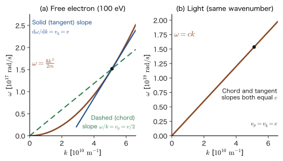
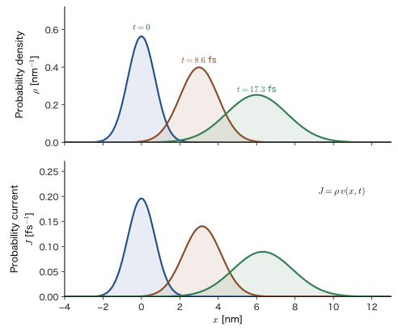
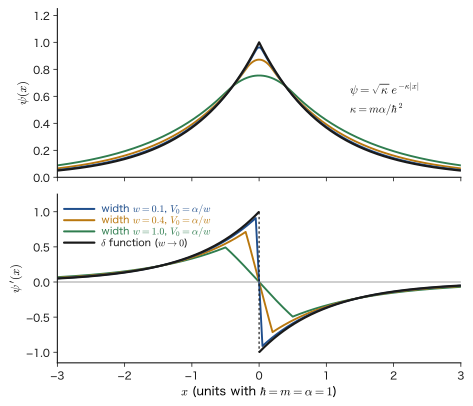

Chapter 9The Schrödinger Equation — Wave Functions and Operators
In Part II, following the experimental facts, we have arrived at the doorstep of quantum mechanics. Light behaves as particles (photons), and electrons behave as waves. The function that describes the wave of an electron is called the wave function $\psi$. We accepted as axioms that $\abs{\psi}^2$ is the probability density of finding the electron (the Born interpretation) and that the commutation relation $\comm{\hat{x}}{\hat{p}}=i\hbar$ holds between position and momentum (Chapter 8). Yet the most important thing is still missing: how do we find the wave function $\psi$ itself? Just as Newton's equation of motion $m\ddot{x}=F$ determined the trajectory of a classical particle, we need an equation that determines the wave function of an electron. That equation is the Schrödinger equation.
In this chapter, starting from $p=h/\lambda$ and $E=h\nu$, which have been confirmed by experiment, we construct the equation that the plane wave of an electron must satisfy (Section 9.1) and learn the ideas of operators and eigenvalue problems that appear in the equation (Section 9.2). We then derive, without skipping a single line of algebra, two results that necessarily follow from the equation: the conservation of probability (Section 9.3) and Ehrenfest's theorem (Section 9.4). Finally, we organize stationary states and superposition (Section 9.5) and the conditions on the wave function and Hermitian operators (Section 9.6).
Let us first look at how this differs from classical mechanics. In classical mechanics, if we are given the position and velocity at some instant (two numbers), the subsequent trajectory is determined uniquely. In the Schrödinger equation, if we are given the wave function $\Psi(x,0)$ at some instant (one function), the subsequent wave function $\Psi(x,t)$ is determined uniquely. The equation is first order in time, contains $i$, and its solutions are complex. Probability enters not at the stage where the wave function evolves in time, but at the stage where we read the result of a measurement off the wave function. The combination of this deterministic part (the Schrödinger equation) and the probabilistic part (the Born rule) is the framework of quantum mechanics.
- Chapter 9 (this chapter): We construct the Schrödinger equation and study operators, the conservation of probability, Ehrenfest's theorem, and stationary states. This chapter connects the experimental facts of Part II with the calculations of Part III.
- Chapter 10 The Infinite Potential Well: The simplest bound state. The boundary condition $\psi=0$ at the walls makes the energy discrete. Dirac notation is also introduced here.
- Chapter 11 The Finite Potential Well: If the walls have a finite height, the wave function penetrates into the walls (we use the matching conditions of Section 9.6 of this chapter).
- Chapter 12 Tunneling: A particle passes through a wall that it should not have enough energy to cross. The reflection and transmission coefficients are defined by the probability current $J$ of this chapter (Section 9.3).
- Chapter 13 The Harmonic Oscillator: The quantum version of the vibration of a spring. It is the basis of molecular vibrations and of lattice vibrations in crystals.
- Chapter 14 The Schrödinger Equation in Three Dimensions: Separation of variables and spherically symmetric potentials. The $\hat{\bm{p}}$ in spherical coordinates from Section 9.2 of this chapter is put to work here.
- Chapters 15, 16, and 17 The Hydrogen Atom: The shapes of atomic orbitals, the energy levels, and the probability of finding the electron.
- Chapter 18 Shielding and Penetration: From hydrogen-like ions to many-electron atoms.
- Chapter 19 Molecular Vibration and Chapter 20 The Morse Potential: Applications of the harmonic oscillator, and the anharmonic vibration in which a bond breaks.
- Be able to connect $p=h/\lambda$ and $E=h\nu$ with the plane wave $e^{i(kx-\omega t)}$, derive the Schrödinger equation for a free particle, and explain that this is an axiom rather than a “derivation”
- Be able to explain the meaning of operators ($\hat{x}$, $\hat{p}$, $\hat{E}$, $\hat{H}$) and eigenvalue equations, and compute the commutator $\comm{\hat{x}}{\hat{p}}f=i\hbar f$ using a test function
- Be able to derive the conservation of probability $\partial\rho/\partial t=-\nabla\cdot\bm{J}$ and explain that $\bm{J}=(\hbar/m)\Imag(\psi^*\nabla\psi)=\rho\,\nabla S/m$ is “probability density × velocity”
- Be able to derive Ehrenfest's theorem $\dd\langle x\rangle/\dd t=\langle p\rangle/m$, $\dd\langle p\rangle/\dd t=-\langle V'\rangle$ by integration by parts, and state the condition under which a wave packet behaves classically
- Be able to derive the time-independent equation $\hat{H}\psi=E\psi$ by separation of variables, and write the time dependence by means of the superposition $\Psi=\sum_nc_n\psi_ne^{-iE_nt/\hbar}$
- Be able to derive the conditions that the wave function must satisfy and the matching conditions ($\psi,\psi'$ are continuous if $V$ is finite; $\psi'$ jumps for a $\delta$-type potential), and prove that the eigenvalues of a Hermitian operator are real and its eigenfunctions are orthogonal
- Earlier chapters of this book: the momentum and wavelength of photons and electrons (Chapter 4, Section 4.4, Chapter 6, Section 6.2, Section 6.3), the Born interpretation, expectation values, and commutation relations (Chapter 8).
- Mathematics (University Mathematics): Euler's formula (Chapter 21, Section 21.4), nabla in cylindrical and spherical coordinates (Chapter 16, Section 16.2, Section 16.5), expectation values (Chapter 14, Section 14.4), the eigenvalue problem of matrices (Chapter 12, Section 12.1), the inner product of functions (Chapter 27, Section 27.2).
- Physics (Introductory University Physics): the phase velocity of waves (Chapter 11, Section 11.4), group velocity (Chapter 17, Section 17.5), conservation of charge (Chapter 37, Section 37.2 (in Japanese)), Hamilton's canonical equations (Chapter 45, Section 45.2 (in Japanese)).
Source notes: Yasuhide Mochizuki, “Physics Notes: Quantum Mechanics 2,” pp. 1–5, and a separate sheet on which Ehrenfest's theorem is written.
9.1 From Matter Waves to the Schrödinger Equation
9.1.1 Looking back at Part II — we want an equation for the wave formula
In a single sentence, the experimental facts of Part II are these: both light and electrons have a face as particles (energy $E$ and momentum $p$) and a face as waves (frequency $\nu$ and wavelength $\lambda$), and the two are connected through the Planck constant $h$ by $E=h\nu$ and $p=h/\lambda$ (for the photon, see Chapter 4, Section 4.4; for how to find the wavelength of an electron and for numerical examples, see Chapter 6, Section 6.3 and Example 9.1). The relation $p=h/\lambda$ proposed by de Broglie has been confirmed by electron diffraction experiments (Chapter 6, Section 6.2, Section 6.5).
With this, for an electron flying freely we know the wavelength $\lambda$ and the frequency $\nu$. But what we really want to know is the electron inside an atom, inside a crystal, or inside a well. There the electron is acted on by a force (the potential $V$), and the wavelength of the wave changes from place to place. Isn't there a single equation that determines the wave function $\Psi(x,t)$ in such cases? In the next section, Section 9.1.2, we substitute the experimentally confirmed relations $p=h/\lambda$ and $E=h\nu$ into a plane wave and try to construct this equation.
9.1.2 Starting from a plane wave — the “derivation” of the Schrödinger equation
The simplest wave is a plane wave with a single wavelength $\lambda$ and a single frequency $\nu$. As we saw in Chapters 1 and 6, we write a wave traveling in the positive direction of the $x$ axis using a complex exponential function.
\begin{equation} \Psi(x,t)=A\exp\left[i\,2\pi\left(\frac{x}{\lambda}-\nu t\right)\right]=A\,e^{i(kx-\omega t)}\qquad\left(k=\frac{2\pi}{\lambda},\ \ \omega=2\pi\nu\right) \label{eq:9-plane} \end{equation}Here $A$ is a constant, $k$ is the wavenumber, and $\omega$ is the angular frequency. Suppose that the motion of the electron can be described by Eq. \eqref{eq:9-plane}. From $p=h/\lambda$ and $h=2\pi\hbar$ ($\hbar$ is read “h-bar” and stands for $h/2\pi$), we have $p=\hbar k$ and $E=h\nu=\hbar\omega$. In other words, the plane wave in Eq. \eqref{eq:9-plane} is the wave of an electron with momentum $\hbar k$ and energy $\hbar\omega$.
Figure 9.1 summarizes the outline of the argument from here on. Differentiating the plane wave twice with respect to $x$ brings out a factor $-k^2$ in front, and differentiating once with respect to $t$ brings out $-i\omega$. If we reinterpret $k$ and $\omega$ as the momentum $p$ and the energy $E$, the differential expressions become expressions in $p$ and $E$. Connecting them through the energy-conservation relation $E=p^2/2m+V$ completes the equation.
![Real part, imaginary part, and probability density of the plane wave e^{i(kx−ωt)}. The upper panel shows the real part (blue) and the imaginary part (green) at t=0 (solid) and t=T/4 (dashed); the wave advances to the right by a quarter wavelength (the dashed real part at t=T/4 coincides with the solid imaginary part at t=0). The lower panel shows the probability density, which is uniformly 1 for the complex plane wave, whereas for the real wave cos² it oscillates between 0 and 1 with position and time](figs/ch09_fig9-2.svg)
Derivation: Constructing the Schrödinger equation from a plane wave
[i] Differentiate twice with respect to $x$. The coefficient of $x$ in the exponent of Eq. \eqref{eq:9-plane} is $i\,2\pi/\lambda$, so differentiating once with respect to $x$ multiplies $\Psi$ by $i\,2\pi/\lambda$, and differentiating once more multiplies it by another $i\,2\pi/\lambda$:
\begin{equation} \frac{\partial^2}{\partial x^2}\Psi(x,t)=\left(i\,\frac{2\pi}{\lambda}\right)^2\Psi(x,t)=-\frac{4\pi^2}{\lambda^2}\,\Psi(x,t) \label{eq:9-d2x} \end{equation}(Here $i^2=-1$.)
[ii] Eliminate the wavelength $\lambda$. Here we consider the case in which $V$ is a constant independent of position (the case in which $V$ varies with $x$ is treated in Section 9.1.3). The total energy of the electron is the sum of the kinetic energy and the potential energy, $E=\dfrac{p^2}{2m}+V$, and the momentum and the wavelength are connected by the de Broglie relation $p=\dfrac{h}{\lambda}$. From these we obtain
$$ p=\sqrt{2m(E-V)}=\frac{h}{\lambda}\qquad\therefore\quad\lambda=\frac{h}{\sqrt{2m(E-V)}},\qquad \frac{1}{\lambda^2}=\frac{2m(E-V)}{h^2} $$Substituting the last expression into Eq. \eqref{eq:9-d2x} gives
$$ \frac{\partial^2}{\partial x^2}\Psi=-\frac{4\pi^2}{h^2}\cdot2m(E-V)\,\Psi $$Now, since $\hbar=\dfrac{h}{2\pi}$ gives $\hbar^2=\dfrac{h^2}{4\pi^2}$, that is, $\dfrac{4\pi^2}{h^2}=\dfrac{1}{\hbar^2}$, this becomes
$$ \frac{\partial^2}{\partial x^2}\Psi=-\frac{2m(E-V)}{\hbar^2}\,\Psi\qquad\text{rearranging}\qquad-\frac{\hbar^2}{2m}\frac{\partial^2}{\partial x^2}\Psi=(E-V)\,\Psi $$Moving $V\Psi$ to the left-hand side, we find that
\begin{equation} -\frac{\hbar^2}{2m}\frac{\partial^2}{\partial x^2}\Psi+V\Psi=E\Psi \label{eq:9-A} \end{equation}holds.
[iii] Differentiate with respect to $t$. The coefficient of $t$ in Eq. \eqref{eq:9-plane} is $-i\,2\pi\nu$, so we have
\begin{equation} \frac{\partial}{\partial t}\Psi=-i\,2\pi\nu\,\Psi \label{eq:9-dt} \end{equation}When the electron is treated as a wave, its energy is $E=h\nu$, that is, $\nu=E/h$. Substituting this into Eq. \eqref{eq:9-dt} and using $\dfrac{2\pi}{h}=\dfrac{1}{\hbar}$, we obtain
$$ \frac{\partial}{\partial t}\Psi=-i\,\frac{2\pi}{h}\,E\Psi=-\frac{i}{\hbar}\,E\Psi $$Multiplying both sides by $i\hbar$ (with $i\cdot(-i)=1$) gives $i\hbar\dfrac{\partial}{\partial t}\Psi=E\Psi$, that is,
\begin{equation} E\Psi=i\hbar\frac{\partial}{\partial t}\Psi\qquad\left(=-\frac{\hbar}{i}\frac{\partial}{\partial t}\Psi\right) \label{eq:9-Epsi} \end{equation}(Here $-\hbar/i=i\hbar$ because $1/i=-i$.)
[iv] Connect the two. Substituting Eq. \eqref{eq:9-Epsi} obtained in [iii] (the relation between $E\Psi$ and the $t$ derivative) for $E\Psi$ on the right-hand side of Eq. \eqref{eq:9-A} obtained in [ii] (the relation between the second derivative with respect to $x$ and $E$), we find that
\begin{equation} -\frac{\hbar^2}{2m}\frac{\partial^2}{\partial x^2}\Psi(x,t)+V\,\Psi(x,t)=i\hbar\frac{\partial}{\partial t}\Psi(x,t) \label{eq:9-se1d} \end{equation}holds.
[v] On to three dimensions. We add terms of the same form for the $y$ and $z$ directions to the kinetic-energy term $-\dfrac{\hbar^2}{2m}\dfrac{\partial^2}{\partial x^2}$ for the $x$ direction (the three directions are equivalent, so terms of the same form line up). Using $\nabla^2=\dfrac{\partial^2}{\partial x^2}+\dfrac{\partial^2}{\partial y^2}+\dfrac{\partial^2}{\partial z^2}$ (the Laplacian), we find that
\begin{equation} -\frac{\hbar^2}{2m}\nabla^2\Psi(x,y,z,t)+V\,\Psi(x,y,z,t)=i\hbar\frac{\partial}{\partial t}\Psi(x,y,z,t) \label{eq:9-se3d} \end{equation}holds.
∎
Equations \eqref{eq:9-se1d} and \eqref{eq:9-se3d} are the Schrödinger equation (the time-dependent Schrödinger equation). The first term on the left-hand side corresponds to the kinetic energy and the second term to the potential energy, and $i\hbar\,\partial/\partial t$ on the right-hand side corresponds to the total energy. The equation as a whole is the statement “kinetic energy + potential energy = total energy,” made to act on the wave function.
Question: Is $\Psi(x,t)$ the “motion of the electron” or a “probability density”?
A natural question arises here. What is $\Psi(x,t)$ in the Schrödinger equation? Is it a quantity that describes how the position of the electron moves with time (the “motion of the electron”), or is it the “probability density” of finding the electron?
The answer is: neither. $\Psi$ is a complex-valued probability amplitude; it neither directly represents the “motion of the electron” nor is it the probability density itself. The square of its absolute value, $\abs{\Psi(x,t)}^2$, is the probability density of finding the electron near position $x$ at time $t$ (the Born interpretation; Chapter 8). As Figure 9.2 shows, for a complex plane wave $\abs{\Psi}^2$ is uniform, there is no information about “where it is,” and the momentum is definite. The information about the momentum is contained in how the phase of the wave function winds (the $k$ in $e^{ikx}$). We will answer this question once more in Section 9.6.1.
9.1.3 What did this derivation show? — conjecture and axiom
At first glance, the calculation in the previous section seems to have “proved” the Schrödinger equation. To be honest, however, it is not a derivation but a plausible guess. There are two reasons. First, the plane wave \eqref{eq:9-plane} we started from is merely the solution for the case where $V$ is constant (no force acts). If $V$ varies with $x$, the wavelength $\lambda=h/\sqrt{2m(E-V)}$ also varies from place to place, so the premise that “the $\lambda$ in $\Psi=A\exp i2\pi(x/\lambda-\nu t)$ is a single constant” breaks down. In Eq. \eqref{eq:9-se1d} of the previous section, we assumed that an equation of the same form also holds when $V$ is a function of $x$. Second, both $p=h/\lambda$ and $E=h\nu$ have meaning only for a plane wave (a single $\lambda$, a single $\nu$). A general wave function is a superposition of waves with various $\lambda$ and $\nu$.
The actual status of the Schrödinger equation is as follows. Schrödinger put the equation forward in 1926, using the idea of matter waves as a clue. Its correctness has been confirmed by its agreement with countless experiments, beginning with the energy levels of the hydrogen atom (Chapter 15). Therefore, like Newton's equation of motion, the Schrödinger equation is not a theorem to be proved from other principles; we accept it as a starting point that cannot be traced back any further (an axiom). This equation is the axiom of time evolution that we announced in Chapter 8 as the third axiom of quantum mechanics (Axiom 8.5), following the Born interpretation (Axiom 8.1) and the commutation relation (Axiom 8.4).
Axiom 8.5 (restated): The Schrödinger equation (axiom of time evolution)
When a particle of mass $m$ moves under the potential energy $V(\bm{r})$, the time dependence of the wave function $\Psi(\bm{r},t)$ obeys the following equation.
\begin{equation} i\hbar\frac{\partial}{\partial t}\Psi(\bm{r},t)=\left[-\frac{\hbar^2}{2m}\nabla^2+V(\bm{r})\right]\Psi(\bm{r},t) \label{eq:9-axiom} \end{equation}If the wave function $\Psi(\bm{r},0)$ at some time is given, the wave function $\Psi(\bm{r},t)$ at all later times is determined uniquely (because the equation is first order in time).
The square brackets on the right-hand side of Eq. \eqref{eq:9-axiom} enclose an operator (the Hamiltonian $\hat{H}$) corresponding to the sum of the kinetic energy and the potential energy; we introduce it in Section 9.2, which follows. Here we point out two important properties of this equation.
- First order in time: Newton's equation of motion is second order in time, and it required two initial conditions, the position and the velocity. The Schrödinger equation is first order, so the only initial condition is the wave function $\Psi(\bm{r},0)$. This is because the wave function already carries the information about the momentum (in the phase of $e^{ikx}$).
- Linear: Since the equation is of first degree in $\Psi$ (it contains no $\Psi^2$ and the like), if $\Psi_1$ and $\Psi_2$ are solutions, then so is $c_1\Psi_1+c_2\Psi_2$, where $c_1,c_2$ are complex constants (the principle of superposition). Indeed, substituting into the equation and using the linearity of differentiation, we find LHS $=c_1(\text{LHS}_1)+c_2(\text{LHS}_2)=c_1(\text{RHS}_1)+c_2(\text{RHS}_2)=$ RHS. Many of the mysteries of quantum mechanics, such as interference, quantum beats, and band structure, originate from this property (Section 9.5).
9.1.4 Plane waves of a free particle — dispersion relation, phase velocity, and group velocity
Let us substitute the plane wave \eqref{eq:9-plane} into the Schrödinger equation $i\hbar\,\partial\Psi/\partial t=-\dfrac{\hbar^2}{2m}\partial^2\Psi/\partial x^2$ of a particle on which no force acts ($V=0$) and check the relation between $\omega$ and $k$.
Derivation: The dispersion relation of a free particle
Differentiating $\Psi=A\,e^{i(kx-\omega t)}$ gives $\dfrac{\partial\Psi}{\partial t}=-i\omega\Psi$ and $\dfrac{\partial^2\Psi}{\partial x^2}=(ik)^2\Psi=-k^2\Psi$. The left-hand side becomes $i\hbar(-i\omega)\Psi=\hbar\omega\Psi$ ($i\cdot(-i)=1$), and the right-hand side becomes $-\dfrac{\hbar^2}{2m}(-k^2)\Psi=\dfrac{\hbar^2k^2}{2m}\Psi$. Equating the coefficients of $\Psi$ on the two sides, we have
$$ \hbar\omega=\frac{\hbar^2k^2}{2m}\qquad\therefore\quad\omega=\frac{\hbar k^2}{2m} $$Substituting $p=\hbar k$ and $E=\hbar\omega$, we obtain $E=p^2/2m$, which agrees with the classical formula for the kinetic energy of a free particle.
∎
This relation is called the dispersion relation.
\begin{equation} \omega(k)=\frac{\hbar k^2}{2m}\qquad\left(E=\frac{p^2}{2m}\right) \label{eq:9-disp} \end{equation}The dispersion relation of light (an electromagnetic wave in vacuum) was the straight line $\omega=ck$, whereas for matter waves it is a quadratic function of $k$ (a parabola) (Figure 9.3). There were two kinds of wave speed (Introductory University Physics, Chapter 11, Section 11.4, Chapter 17, Section 17.5): the speed at which the phase advances (the phase velocity) and the speed at which the center of a wave packet advances (the group velocity). From Eq. \eqref{eq:9-disp} we obtain
\begin{equation} v_{\mathrm p}=\frac{\omega}{k}=\frac{\hbar k}{2m}=\frac{p}{2m}=\frac{v}{2},\qquad v_{\mathrm g}=\frac{\dd\omega}{\dd k}=\frac{\hbar k}{m}=\frac{p}{m}=v \label{eq:9-vpvg} \end{equation}where $v=p/m$ is the speed of a classical particle. The center of the wave packet (the group velocity) advances at the same speed $v$ as the particle, and the phase advances at half that speed, $v/2$. The reason that $v_{\mathrm p}=v_{\mathrm g}/2$ holds exactly is that, for the parabola $\omega\propto k^2$, the slope of the chord joining the origin and a point on the curve ($\omega/k$) is exactly half the slope of the tangent at that point ($\dd\omega/\dd k$) (Figure 9.3). For light ($\omega=ck$), on the other hand, the chord and the tangent both have slope $c$, and $v_{\mathrm p}=v_{\mathrm g}=c$.

Caution: Why we need not worry that the phase velocity is half the particle's speed
You may be bothered that “the particle moves at speed $v$, yet the crests of the wave advance at only $v/2$.” What has physical meaning, however, is the speed at which energy and probability are carried, that is, the group velocity $v_{\mathrm g}=v$. The phase velocity is just the advance of the phase of a single plane wave, and it is not a measurable quantity. Indeed, the origin of energy is arbitrary (Section 9.5.2), and shifting $E$ by a constant $E_0$ does not change the physics. But $\omega=E/\hbar$ changes to $\omega+E_0/\hbar$, so the phase velocity $\omega/k$ changes. $\dd\omega/\dd k$, on the other hand, does not change. What determines the physical speed is the group velocity, which is independent of the choice of the origin.
Because the Schrödinger equation is linear, a superposition of plane waves, $\Psi(x,t)=\displaystyle\int A(k)\,e^{i[kx-\omega(k)t]}\dd k$, is also a solution. When $A(k)$ is a peaked function that is large only near $k_0$, this represents a wave packet localized in the $x$ direction, whose center moves at the group velocity $\dd\omega/\dd k|_{k_0}=\hbar k_0/m$. However, since $\omega$ is not proportional to $k$ (there is dispersion), the plane-wave components that make up the packet advance at slightly different phase velocities, and the packet spreads with time (Figure 9.6 in Section 9.3.4).
9.1.5 Why complex numbers? And the dimension of the wave function
Because the Schrödinger equation contains $i$, its solutions are complex. In Chapter 1, we saw the reason: if one substitutes the real wave $\cos(kx-\omega t)$ into the equation for a free particle, the left-hand side is imaginary and the right-hand side is real, so they cannot possibly be equal. Let us look at this a little more closely. Let $\Psi=u+iv$ ($u,v$ are real functions) and, assuming that $V$ is real, substitute into Eq. \eqref{eq:9-se1d}; the left-hand side becomes $i\hbar(\partial_tu+i\,\partial_tv)=-\hbar\,\partial_tv+i\hbar\,\partial_tu$ ($\partial_t=\partial/\partial t$). Equating the real and imaginary parts separately, we obtain
$$ -\hbar\frac{\partial v}{\partial t}=-\frac{\hbar^2}{2m}\frac{\partial^2u}{\partial x^2}+Vu,\qquad \hbar\frac{\partial u}{\partial t}=-\frac{\hbar^2}{2m}\frac{\partial^2v}{\partial x^2}+Vv $$These are two real equations in which $u$ and $v$ are intertwined. The first means “the time dependence of $v$ is determined by the form of $u$,” and the second means “the time dependence of $u$ is determined by the form of $v$”: the real and imaginary parts chase each other, and evolve in time while shifting their phases. For a plane wave, $u=\cos(kx-\omega t)$ and $v=\sin(kx-\omega t)$ are the solution of this chase (blue and green in Figure 9.2). If we set $v=0$ (a real wave), the second equation gives $\hbar\,\partial u/\partial t=0$, and only waves that do not change with time are allowed. For a wave to propagate (to change with time), both the real part and the imaginary part are needed.
Intuition: A complex wave is a “rotating arrow”
The complex number $e^{i(kx-\omega t)}$ is a point on the unit circle in the complex plane; as $x$ increases it rotates counterclockwise by the angle $kx$, and as time advances it turns back clockwise by the angle $\omega t$. At each position there grows a single arrow (of length $\abs{A}$), and only the direction of the arrow changes from place to place like a wave (the helix in Figure 1.5 of Chapter 1). The length of the arrow, $\abs{\Psi}$, determines the probability density $\abs{\Psi}^2$, and how the direction changes (the phase) determines the momentum. For a real wave, there is no room to carry phase information, and it cannot express “moving forward.”
Finally, let us check the dimension of the wave function. Since $\abs{\Psi}^2$ is a probability density, in one dimension $\int\abs{\Psi}^2\dd x=1$ (dimensionless) implies that the dimension of $\abs{\Psi}^2$ is $[\text{length}]^{-1}$, that is, the dimension of $\Psi$ is $[\text{length}]^{-1/2}$. In three dimensions, $\int\abs{\Psi}^2\dd^3r=1$ gives $[\text{length}]^{-3/2}$. We can also check that every term of Eq. \eqref{eq:9-se1d} has the dimension of energy $\times\Psi$. The term $i\hbar\,\partial\Psi/\partial t$ is $[\mathrm{J\,s}]/[\mathrm{s}]=[\mathrm{J}]$ multiplied by $\Psi$, and in $\dfrac{\hbar^2}{2m}\dfrac{\partial^2\Psi}{\partial x^2}$ the dimension of the coefficient is $\dfrac{[\mathrm{J\,s}]^2}{[\mathrm{kg}]\,[\mathrm{m}]^2}=\dfrac{[\mathrm{kg\,m^2/s}]^2}{[\mathrm{kg\,m^2}]}=[\mathrm{kg\,m^2/s^2}]=[\mathrm{J}]$, so this too is $[\mathrm{J}]$ multiplied by $\Psi$ ($\mathrm{J\,s}=\mathrm{kg\,m^2/s}$).
Example 9.1: Plane wave of an electron with kinetic energy $100\ \mathrm{eV}$
For a plane wave $\Psi=A\,e^{i(kx-\omega t)}$ of an electron with kinetic energy $100\ \mathrm{eV}$, find the momentum $p$, wavenumber $k$, wavelength $\lambda$, angular frequency $\omega$, frequency $\nu$, particle speed $v$, phase velocity $v_{\mathrm p}$, and group velocity $v_{\mathrm g}$.
Solution. $E=100\ \mathrm{eV}=100\times1.602\,177\times10^{-19}\ \mathrm{J}=1.602\,177\times10^{-17}\ \mathrm{J}$. The mass of the electron is $m=9.109\,384\times10^{-31}\ \mathrm{kg}$. From $E=p^2/2m$, the momentum is
$$ p=\sqrt{2mE}=\sqrt{2\times9.109\,384\times10^{-31}\times1.602\,177\times10^{-17}}\ \mathrm{kg\,m/s}=\sqrt{2.9190\times10^{-47}}=5.403\times10^{-24}\ \mathrm{kg\,m/s} $$Using $\hbar=1.054\,572\times10^{-34}\ \mathrm{J\,s}$, the wavenumber is $k=p/\hbar=5.403\times10^{-24}/1.054\,572\times10^{-34}=5.123\times10^{10}\ \mathrm{m^{-1}}$, and the wavelength is $\lambda=2\pi/k=1.226\times10^{-10}\ \mathrm{m}=0.1226\ \mathrm{nm}$, which agrees with the value in Chapter 6. The angular frequency is $\omega=E/\hbar=1.602\,177\times10^{-17}/1.054\,572\times10^{-34}=1.519\times10^{17}\ \mathrm{rad/s}$, and the frequency is $\nu=\omega/2\pi=2.418\times10^{16}\ \mathrm{Hz}$. As a check of the dispersion relation, $\hbar k^2/2m=1.054\,572\times10^{-34}\times(5.123\times10^{10})^2/(2\times9.109\,384\times10^{-31})=1.519\times10^{17}\ \mathrm{rad/s}$, which agrees with $E/\hbar$. The speed of the particle is $v=p/m=5.403\times10^{-24}/9.109\,384\times10^{-31}=5.931\times10^{6}\ \mathrm{m/s}$ (since this is 2% of the speed of light, the nonrelativistic formula is adequate). Therefore, the phase velocity is $v_{\mathrm p}=\omega/k=1.519\times10^{17}/5.123\times10^{10}=2.966\times10^{6}\ \mathrm{m/s}=v/2$, and the group velocity is $v_{\mathrm g}=\hbar k/m=v=5.931\times10^{6}\ \mathrm{m/s}$.
From $\lambda=h/\sqrt{2mE}$, the wavelength can be written as $\lambda\ (\mathrm{nm})=1.226/\sqrt{E\ (\mathrm{eV})}$. At the voltages used in electron diffraction experiments, for $54\ \mathrm{V}$ electrons (the Davisson–Germer experiment; Chapter 6, Section 6.5) we obtain $\lambda=1.226/\sqrt{54}=0.167\ \mathrm{nm}$, which is comparable to the interatomic spacing of a Ni crystal (in the $0.2\ \mathrm{nm}$ range), so diffraction occurs. For $200\ \mathrm{eV}$, $\lambda=1.226/\sqrt{200}=0.0867\ \mathrm{nm}$.
Example 9.2: Substituting a plane wave written in terms of $h$ into the free-particle equation
Find the relation between $\nu$ and $\lambda$ required for the plane wave $\Psi=A\exp\left[i\,2\pi\left(\dfrac{x}{\lambda}-\nu t\right)\right]$ to satisfy the Schrödinger equation $i\hbar\,\dfrac{\partial\Psi}{\partial t}=-\dfrac{\hbar^2}{2m}\dfrac{\partial^2\Psi}{\partial x^2}$ with $V=0$. Verify that, together with $p=h/\lambda$ and $E=h\nu$, this gives $E=p^2/2m$, and find $\nu$ and $E$ for an electron with $\lambda=0.1226\ \mathrm{nm}$.
Solution. We have $\dfrac{\partial\Psi}{\partial t}=-i2\pi\nu\,\Psi$ and $\dfrac{\partial^2\Psi}{\partial x^2}=\left(i\dfrac{2\pi}{\lambda}\right)^2\Psi=-\dfrac{4\pi^2}{\lambda^2}\Psi$. The left-hand side is $i\hbar(-i2\pi\nu)\Psi=2\pi\hbar\nu\,\Psi=h\nu\,\Psi$ ($2\pi\hbar=h$), and the right-hand side is $-\dfrac{\hbar^2}{2m}\left(-\dfrac{4\pi^2}{\lambda^2}\right)\Psi=\dfrac{4\pi^2\hbar^2}{2m\lambda^2}\Psi=\dfrac{h^2}{2m\lambda^2}\Psi$ ($4\pi^2\hbar^2=h^2$). Therefore $h\nu=\dfrac{h^2}{2m\lambda^2}$, that is,
$$ \nu=\frac{h}{2m\lambda^2} $$Using $p=h/\lambda$ and $E=h\nu$, we obtain $E=h\nu=\dfrac{h^2}{2m\lambda^2}=\dfrac{p^2}{2m}$, which is the formula for the kinetic energy. For the numerical values, take $\lambda=1.2264\times10^{-10}\ \mathrm{m}$, $h=6.626\,070\times10^{-34}\ \mathrm{J\,s}$, and $m=9.109\,384\times10^{-31}\ \mathrm{kg}$; then $\nu=\dfrac{6.626\,070\times10^{-34}}{2\times9.109\,384\times10^{-31}\times(1.2264\times10^{-10})^2}=\dfrac{6.626\,070\times10^{-34}}{2.7402\times10^{-50}}=2.418\times10^{16}\ \mathrm{Hz}$ and $E=h\nu=1.602\times10^{-17}\ \mathrm{J}=100.0\ \mathrm{eV}$ (in agreement with Example 9.1).
Example 9.3: A three-dimensional plane wave and the momentum vector
Find the condition for the three-dimensional plane wave $\Psi=A\,e^{i(\bm{k}\cdot\bm{r}-\omega t)}$ ($\bm{k}=(k_x,k_y,k_z)$, $\bm{k}\cdot\bm{r}=k_xx+k_yy+k_zz$) to satisfy the three-dimensional Schrödinger equation, Eq. \eqref{eq:9-se3d}, with $V=0$.
Solution. Since the only $x$ dependence of $\bm{k}\cdot\bm{r}$ is $k_xx$, we have $\dfrac{\partial}{\partial x}\Psi=ik_x\Psi$ and $\dfrac{\partial^2}{\partial x^2}\Psi=(ik_x)^2\Psi=-k_x^2\Psi$. The same holds for $y,z$, so $\nabla^2\Psi=-(k_x^2+k_y^2+k_z^2)\Psi=-k^2\Psi$ ($k=\abs{\bm{k}}$). Also, $\dfrac{\partial}{\partial t}\Psi=-i\omega\Psi$. Setting $V=0$ in Eq. \eqref{eq:9-se3d}, the left-hand side is $-\dfrac{\hbar^2}{2m}(-k^2)\Psi=\dfrac{\hbar^2k^2}{2m}\Psi$ and the right-hand side is $i\hbar(-i\omega)\Psi=\hbar\omega\Psi$, so the condition is $\omega=\dfrac{\hbar k^2}{2m}$. The momentum is $\bm{p}=\hbar\bm{k}$ (with the three components $\hbar k_x,\hbar k_y,\hbar k_z$), and $E=\hbar\omega=\dfrac{\hbar^2k^2}{2m}=\dfrac{\abs{\bm{p}}^2}{2m}$. The direction in which the wave travels is the direction of $\bm{k}$, and the wavefronts are the planes $\bm{k}\cdot\bm{r}=$ constant.
9.2 Operators and Eigenvalue Problems — Momentum, Energy, and the Hamiltonian
9.2.1 What is an operator? — a rule that turns a function into a function
On the right-hand side of the Schrödinger equation, Eq. \eqref{eq:9-axiom}, there appeared the expression $\left[-\dfrac{\hbar^2}{2m}\nabla^2+V(\bm{r})\right]\Psi$. The contents of the square brackets are a “rule” that takes a function, the wave function $\Psi$, and returns another function ($-\dfrac{\hbar^2}{2m}\nabla^2\Psi+V\Psi$). Such a rule is called an operator.
Definition 9.1: Operator
A rule $\hat{A}$ that assigns to a function $f$ another function $\hat{A}f$ is called an operator. In this book, we always put a hat ($\hat{\ }$) on an operator to distinguish it from a number (a $c$-number). All operators that appear in quantum mechanics are linear:
$$ \hat{A}\,(c_1f_1+c_2f_2)=c_1\,\hat{A}f_1+c_2\,\hat{A}f_2\qquad(c_1,c_2\text{ are constants}) $$The product $\hat{A}\hat{B}$ of two operators means “first let $\hat{B}$ act on $f$, then let $\hat{A}$ act on the result” (the operators act in order from the right): $\hat{A}\hat{B}f=\hat{A}(\hat{B}f)$.
Here are some examples. The position operator $\hat{x}$ is the rule “multiply by $x$,” namely $\hat{x}f(x)=x\,f(x)$; the derivative $\dfrac{\dd}{\dd x}$ is the rule “differentiate with respect to $x$”; and $\nabla^2$ is the rule “take the sum of the second derivatives.” All of these are linear. In general, when operators are applied in succession, swapping the order changes the result. For example, multiplying $f$ by $x$ and then differentiating gives a different result from differentiating and then multiplying by $x$, as follows (we used the product rule):
$$ \underbrace{\frac{\dd}{\dd x}\bigl(x\,f\bigr)}_{\text{multiply, then differentiate}}=f+x\frac{\dd f}{\dd x},\qquad \underbrace{x\,\frac{\dd f}{\dd x}}_{\text{differentiate, then multiply}} $$This difference becomes one of the central ideas of quantum mechanics (the commutation relation $\comm{\hat{x}}{\hat{p}}=i\hbar$; see Section 9.2.7).
9.2.2 The coordinate representation of the momentum operator — Cartesian, cylindrical, and spherical coordinates
The operator corresponding to the momentum $\bm{p}$ of classical mechanics is the following momentum operator (we verify that this definition is correct in Section 9.2.4 by applying it to a plane wave).
\begin{equation} \hat{\bm{p}}=\frac{\hbar}{i}\nabla=-i\hbar\nabla,\qquad \hat{p}=\frac{\hbar}{i}\frac{\partial}{\partial x}\ \ (1\text{-dimensional}) \label{eq:9-phat} \end{equation}($\hbar/i=-i\hbar$). The symbol $\nabla$ (nabla) is the operator that forms the gradient, and in Cartesian coordinates $\nabla=\left(\dfrac{\partial}{\partial x},\dfrac{\partial}{\partial y},\dfrac{\partial}{\partial z}\right)$. Therefore the three components of $\hat{\bm{p}}$ are $\hat{p}_x=\dfrac{\hbar}{i}\dfrac{\partial}{\partial x}$, $\hat{p}_y=\dfrac{\hbar}{i}\dfrac{\partial}{\partial y}$, and $\hat{p}_z=\dfrac{\hbar}{i}\dfrac{\partial}{\partial z}$, and $\hat{\bm{p}}^2=\hat{p}_x^2+\hat{p}_y^2+\hat{p}_z^2=-\hbar^2\nabla^2$. The kinetic energy $\hat{\bm{p}}^2/2m=-\dfrac{\hbar^2}{2m}\nabla^2$ agrees with the first term of the Schrödinger equation.
For spherically symmetric problems such as atoms, and for problems with cylindrical shape, it is better to write $\nabla$ in cylindrical coordinates or spherical coordinates rather than in Cartesian coordinates. We use the following relations (University Mathematics, Chapter 16, Sections 16.2 (cylindrical coordinates) and 16.5 (nabla in spherical coordinates), and Chapter 44, Sections 44.3 and 44.4 (the Laplacian in cylindrical and spherical coordinates)). Note that, so as not to confuse it with the probability density $\rho$, this book writes the radial coordinate of cylindrical coordinates as $s$ (in University Mathematics, Chapter 16, we wrote $r$).
Formula 9.1: Coordinate components of the momentum operator
In Cartesian coordinates, cylindrical coordinates $(s,\varphi,z)$, and spherical coordinates $(r,\theta,\varphi)$ ($\theta$ is the angle from the $z$ axis and $\varphi$ is the azimuthal angle), the momentum operator $\hat{\bm{p}}=\dfrac{\hbar}{i}\nabla$ can be written as follows.
\begin{align} \hat{\bm{p}}&=\frac{\hbar}{i}\left(\frac{\partial}{\partial x},\ \frac{\partial}{\partial y},\ \frac{\partial}{\partial z}\right) \label{eq:9-p-cart}\\ &=\frac{\hbar}{i}\left(\frac{\partial}{\partial s},\ \frac{1}{s}\frac{\partial}{\partial \varphi},\ \frac{\partial}{\partial z}\right)\quad\text{(components in cylindrical coordinates, along }\bm{e}_s,\bm{e}_\varphi,\bm{e}_z\text{)} \label{eq:9-p-cyl}\\ &=\frac{\hbar}{i}\left(\frac{\partial}{\partial r},\ \frac{1}{r}\frac{\partial}{\partial \theta},\ \frac{1}{r\sin\theta}\frac{\partial}{\partial \varphi}\right)\quad\text{(components in spherical coordinates, along }\bm{e}_r,\bm{e}_\theta,\bm{e}_\varphi\text{)} \label{eq:9-p-sph} \end{align}That is, $\hat{\bm{p}}=\dfrac{\hbar}{i}\left(\bm{e}_s\dfrac{\partial}{\partial s}+\bm{e}_\varphi\dfrac{1}{s}\dfrac{\partial}{\partial\varphi}+\bm{e}_z\dfrac{\partial}{\partial z}\right)=\dfrac{\hbar}{i}\left(\bm{e}_r\dfrac{\partial}{\partial r}+\bm{e}_\theta\dfrac{1}{r}\dfrac{\partial}{\partial\theta}+\bm{e}_\varphi\dfrac{1}{r\sin\theta}\dfrac{\partial}{\partial\varphi}\right)$.
Intuition: Why do $1/s$ and $1/(r\sin\theta)$ appear?
Each component of nabla is “the rate of change when we move a unit length in that direction.” In cylindrical coordinates, even if we move the angle $\varphi$ by $\dd\varphi$, the distance actually traveled is $s\,\dd\varphi$, that is, the angular increment multiplied by the distance $s$ from the axis. Therefore the rate of change “per unit length” is $\dfrac{1}{s}\dfrac{\partial}{\partial\varphi}$. The same holds in spherical coordinates: moving $\theta$ by $\dd\theta$ takes us a distance $r\,\dd\theta$, and moving $\varphi$ by $\dd\varphi$ takes us a distance $r\sin\theta\,\dd\varphi$ ($r\sin\theta$ is the distance to the $z$ axis). A derivative with respect to an angle is not a quantity “per length,” so we must divide by the distance.
Advanced Topic: The “radial momentum” is not $\dfrac{\hbar}{i}\dfrac{\partial}{\partial r}$
We state the conclusion first. The expression $\dfrac{\hbar}{i}\dfrac{\partial}{\partial r}$ in Eq. \eqref{eq:9-p-sph} is the coefficient of the $\bm{e}_r$ component of $\hat{\bm{p}}$; it is not itself the operator for the radial momentum. The radial momentum is $$ \hat{p}_r=\frac{\hbar}{i}\left(\frac{\partial}{\partial r}+\frac{1}{r}\right) $$ (we use this in Chapter 14 when we split the kinetic energy into a radial part and an angular part; on a first reading, you may skip this box).
The reason is that $\bm{e}_r$ changes its direction from place to place (Figure 9.4). We have $\bm{e}_r\cdot\hat{\bm{p}}\Psi=\dfrac{\hbar}{i}\dfrac{\partial\Psi}{\partial r}$, whereas $\hat{\bm{p}}\cdot(\bm{e}_r\Psi)=\dfrac{\hbar}{i}\left(\bm{e}_r\cdot\nabla\Psi+\Psi\,\nabla\cdot\bm{e}_r\right)=\dfrac{\hbar}{i}\left(\dfrac{\partial\Psi}{\partial r}+\dfrac{2}{r}\Psi\right)$ (here $\nabla\cdot\bm{e}_r=\dfrac{1}{r^2}\dfrac{\partial}{\partial r}(r^2)=\dfrac{2}{r}$). Taking the average of the two, $\hat{p}_r=\tfrac12\left(\bm{e}_r\cdot\hat{\bm{p}}+\hat{\bm{p}}\cdot\bm{e}_r\right)$, gives the expression above. The extra $1/r$ is needed because the volume element in spherical coordinates is $r^2\dd r\,\dd\Omega$, and integrating $\int r^2f^*\,\partial_rg\,\dd r$ by parts produces a $2/r$, as in $\partial_r(r^2f^*)=r^2\left(\partial_rf^*+\tfrac{2}{r}f^*\right)$. Only with this $1/r$ term does $\hat{p}_r$ become a Hermitian operator (Section 9.6.4).
Similarly, multiplying the $\varphi$ component $\hat{p}_\varphi=\dfrac{\hbar}{i}\dfrac{1}{s}\dfrac{\partial}{\partial\varphi}$ by the distance $s$ from the axis gives the angular momentum about the $z$ axis, $\hat{L}_z=s\hat{p}_\varphi=-i\hbar\dfrac{\partial}{\partial\varphi}$ (Chapter 21).
9.2.3 The eigenvalue equation — operator × eigenfunction = eigenvalue × eigenfunction
When an operator $\hat{A}$ acts on a function $\psi$, the result is sometimes a constant multiple of the original function. Such a special pair of a function and a constant determines the measured values in quantum mechanics (Chapter 8, Section 8.3, Definition 8.3). That is, when
\begin{equation} \hat{A}\,\psi=a\,\psi\qquad\text{(operator)}\times\text{(eigenfunction)}=\text{(eigenvalue)}\times\text{(eigenfunction)} \label{eq:9-eig} \end{equation}holds, Eq. \eqref{eq:9-eig} is called the eigenvalue equation, $\psi$ ($\not\equiv0$) is called an eigenfunction of the operator $\hat{A}$, and the constant $a$ is called the eigenvalue (belonging to $\psi$). Since the eigenvalue $a$ is a number (a $c$-number), we do not put a hat on it.
This has the same form as the eigenvalue problem of a matrix, $A\bm{v}=\lambda\bm{v}$ (University Mathematics, Chapter 12, Section 12.1). If we regard a function $\psi(x)$ as a vector with infinitely many components, “the value at each point $x$,” then an operator corresponds to an infinite-dimensional matrix and an eigenfunction to an eigenvector. For example, $\dfrac{\dd}{\dd x}e^{ax}=a\,e^{ax}$ is the eigenvalue equation of the operator $\dfrac{\dd}{\dd x}$, with eigenfunction $e^{ax}$ and eigenvalue $a$.
The physical meaning of eigenvalues: the values actually measured
In quantum mechanics, an eigenvalue is a value obtained in an actual measurement (for example, the measured value of an electron's momentum). If we measure a system in the state of an eigenfunction $\psi_a$ of the operator $\hat{A}$ corresponding to a physical quantity $A$, we always obtain the eigenvalue $a$. When we measure a system in a general state, one of the eigenvalues is obtained (probabilistically). Since the measured value of a physical quantity is real, the eigenvalues must be real (in Section 9.6.5 we show that it suffices for the operator to be a Hermitian operator).
Commuting operators have a complete set of common eigenfunctions
If two operators $\hat{A},\hat{B}$ commute ($\hat{A}\hat{B}=\hat{B}\hat{A}$), we can take a complete set of common eigenfunctions (they can be diagonalized simultaneously). That is, the two eigenvalues can be determined at the same time. The key point is the following: if $\hat{A}\psi=a\psi$, then $\hat{A}(\hat{B}\psi)=\hat{B}\hat{A}\psi=a\,(\hat{B}\psi)$, so $\hat{B}\psi$ is also an eigenfunction with eigenvalue $a$, and if there is no degeneracy, then $\hat{B}\psi\propto\psi$ (the proof is Theorem 8.2 in Chapter 8, Section 8.4.5. When there is degeneracy, it suffices to diagonalize $\hat{B}$ within the space spanned by the eigenfunctions with eigenvalue $a$).
Conversely, when the commutator is a constant other than $0$ ($i\hbar$), as for $\hat{x}$ and $\hat{p}$, there is no common eigenfunction at all, and the two physical quantities never take definite values at the same time (Theorem 8.2 in Chapter 8, Section 8.4; this is also the basis of the uncertainty principle). In general, even for operators that do not commute, particular states can be common eigenfunctions (for example, the angular momentum operators $\hat{L}_x$ and $\hat{L}_y$ do not commute, but the $l=0$ state is an eigenfunction of both). The use of commutativity appears in earnest in the treatment of angular momentum (Part IV).
9.2.4 Applying the momentum and energy operators to a plane wave
Following the momentum operator \eqref{eq:9-phat}, we define the energy operator $\hat{E}$ by a time derivative:
\begin{equation} \hat{p}=\frac{\hbar}{i}\frac{\partial}{\partial x},\qquad \hat{E}=-\frac{\hbar}{i}\frac{\partial}{\partial t}=i\hbar\frac{\partial}{\partial t} \label{eq:9-pE} \end{equation}We check that these really give the momentum and the energy by letting them act on the simplest function, the plane wave $\Psi(x,t)=A\,e^{i(kx-\omega t)}$. Differentiating with respect to $x$ brings down the coefficient $ik$ of $x$ in the exponent, and differentiating with respect to $t$ brings down $-i\omega$.
\begin{align} \hat{p}\,\Psi&=\frac{\hbar}{i}\frac{\partial}{\partial x}A\,e^{i(kx-\omega t)}=\frac{\hbar}{i}\,(ik)\,A\,e^{i(kx-\omega t)}=\hbar k\,\Psi \label{eq:9-p-eig}\\ \hat{E}\,\Psi&=-\frac{\hbar}{i}\frac{\partial}{\partial t}A\,e^{i(kx-\omega t)}=-\frac{\hbar}{i}\,(-i\omega)\,A\,e^{i(kx-\omega t)}=\hbar\omega\,\Psi \label{eq:9-E-eig} \end{align}(Here $\dfrac{\hbar}{i}\cdot i=\hbar$ and $-\dfrac{\hbar}{i}\cdot(-i)=\hbar$.) Thus the plane wave $\Psi$ is an eigenfunction of $\hat{p}$ with eigenvalue $\hbar k$, and an eigenfunction of $\hat{E}$ with eigenvalue $\hbar\omega$. The eigenvalues are the momentum and the energy themselves. The de Broglie relations $p=\hbar k$ and $E=\hbar\omega$ have appeared as eigenvalue equations. Moreover, the plane wave is a common eigenfunction of $\hat{p}$ and $\hat{E}$, so the momentum and the energy are definite at the same time (this corresponds to the fact that $\hat{p}$ and $\hat{E}$ commute; Section 9.2.3).
Caution: $\cos kx$ is not an eigenfunction of $\hat{p}$
The result $\hat{p}\cos kx=\dfrac{\hbar}{i}(-k\sin kx)=i\hbar k\sin kx$ is not a constant multiple of $\cos kx$. Indeed, $\cos kx=\dfrac12\left(e^{ikx}+e^{-ikx}\right)$ is a superposition of plane waves with momenta $+\hbar k$ and $-\hbar k$, so the momentum is not definite (it is a standing wave in which a right-moving wave and a left-moving wave are superposed). If we measure the momentum, $+\hbar k$ and $-\hbar k$ are obtained with equal probability, and the mean value is $0$ (Chapter 1).
A plane wave cannot be normalized — box normalization and continuum normalization
For a plane wave, $\abs{\Psi}^2=\abs{A}^2$ is uniform, and $\int_{-\infty}^{\infty}\abs{\Psi}^2\dd x=\infty$, so it cannot be normalized to $1$. A state of definite momentum has a completely uncertain position (the particle is found anywhere with equal probability), and as the state of a single particle it is an idealized limit. There are two conventions for using plane waves.
(i) Box normalization: Consider a periodic box of length $L$ ($\psi(x+L)=\psi(x)$). Then $k=2\pi n/L$ ($n$ is an integer), and $\psi_k(x)=L^{-1/2}e^{ikx}$ can be normalized as $\int_0^L\abs{\psi_k}^2\dd x=1$. In three dimensions, the function is $V^{-1/2}e^{i\bm{k}\cdot\bm{r}}$ in a box of volume $V$.
(ii) Continuum normalization: Let $\psi_p(x)=\dfrac{1}{\sqrt{2\pi\hbar}}\,e^{ipx/\hbar}$. Then $\displaystyle\int_{-\infty}^{\infty}\psi_{p'}^*\psi_p\dd x=\dfrac{1}{2\pi\hbar}\int_{-\infty}^{\infty}e^{i(p-p')x/\hbar}\dd x=\delta(p-p')$ (here $\displaystyle\int e^{iqx/\hbar}\dd x=2\pi\hbar\,\delta(q)$, with the Dirac $\delta$ function). Since the values of the momentum are continuous, the “$=1$, $=0$” for discrete eigenvalues (the Kronecker delta $\delta_{mn}$) is replaced by the $\delta$ function. In three dimensions it is $(2\pi\hbar)^{-3/2}e^{i\bm{p}\cdot\bm{r}/\hbar}$. This $\psi_p$ is the kernel of the transformation to the momentum representation $\phi(p)=\displaystyle\int\psi_p^*(x)\,\psi(x)\dd x$ (the Fourier transform in Chapter 2, Section 2.3).
Example 9.4: Action of $\hat{p}$ and $\hat{H}$ — Is $\sin(n\pi x/L)$ an eigenfunction of $\hat{p}$?
On the region $0\le x\le L$ of length $L$, consider $\psi_n(x)=\sqrt{\dfrac{2}{L}}\sin\dfrac{n\pi x}{L}$ ($n=1,2,\dots$). (a) Find $\hat{p}\psi_n$ and show that $\psi_n$ is not an eigenfunction of $\hat{p}$. (b) Find $\hat{p}^2\psi_n$ inside the box, and find $\langle p^2\rangle$. Why is $\psi_n$ not an eigenfunction of $\hat{p}^2$ over all space? (c) Setting $V=0$ inside the region, find $\hat{H}\psi_n$, and find, in eV, the eigenvalue for $n=1$ of an electron with $L=1\ \mathrm{nm}$.
Solution. (a) $\hat{p}\psi_n=-i\hbar\dfrac{\dd}{\dd x}\sqrt{\dfrac{2}{L}}\sin\dfrac{n\pi x}{L}=-i\hbar\sqrt{\dfrac{2}{L}}\,\dfrac{n\pi}{L}\cos\dfrac{n\pi x}{L}$. This is a $\cos$, and it is not a constant multiple of $\sin$ (the ratio $\hat{p}\psi_n/\psi_n=-i\hbar(n\pi/L)\cot(n\pi x/L)$ depends on $x$ and is not a constant), so $\psi_n$ is not an eigenfunction of $\hat{p}$. This is because $\sin\dfrac{n\pi x}{L}=\dfrac{1}{2i}\left(e^{in\pi x/L}-e^{-in\pi x/L}\right)$ is a superposition of plane waves with momenta $+n\pi\hbar/L$ and $-n\pi\hbar/L$.
(b) Acting once more, inside the box ($0\lt x\lt L$) we have $\hat{p}^2\psi_n=-\hbar^2\dfrac{\dd^2}{\dd x^2}\psi_n=-\hbar^2\left(-\dfrac{n^2\pi^2}{L^2}\right)\psi_n=\left(\dfrac{n\pi\hbar}{L}\right)^2\psi_n$ (the second derivative of $\sin$ is $\sin$ multiplied by $-(n\pi/L)^2$). Therefore $\langle p^2\rangle=\displaystyle\int_0^L\psi_n\,\hat{p}^2\psi_n\dd x=\left(\dfrac{n\pi\hbar}{L}\right)^2\int_0^L\psi_n^2\dd x=\left(\dfrac{n\pi\hbar}{L}\right)^2$ (writing it as $\hbar^2\int_0^L\abs{\psi_n'}^2\dd x$ by integration by parts gives the same value). However, the wave function, which is set to $\psi=0$ outside the box, has kinks at the walls $x=0,\,L$ ($\psi'$ jumps from $0$ to a finite value), so when $\hat{p}^2$ is applied over all space, $\delta$ functions appear at the positions of the walls. For that reason, $\psi_n$ is not an eigenfunction of $\hat{p}^2$ over all space, and the momentum is not definite at $\pm n\pi\hbar/L$ either. The momentum has a broad distribution that, when $n$ is large, has peaks near $\pm n\pi\hbar/L$.
(c) Since $V=0$ inside the box, $\hat{H}\psi_n=\dfrac{\hat{p}^2}{2m}\psi_n=\dfrac{n^2\pi^2\hbar^2}{2mL^2}\psi_n=\dfrac{n^2h^2}{8mL^2}\psi_n$ ($\pi^2\hbar^2=h^2/4$). The eigenvalue is $E_n=\dfrac{n^2h^2}{8mL^2}$ (particle in a box, Chapter 10). For an electron with $L=1\ \mathrm{nm}$ and $n=1$, we have $\dfrac{h^2}{8m_{\mathrm e}}=0.3760\ \mathrm{eV\,nm^2}$ ($\dfrac{(6.626\,070\times10^{-34})^2}{8\times9.109\,384\times10^{-31}}\ \mathrm{J\,m^2}=6.0247\times10^{-38}\ \mathrm{J\,m^2}=0.3760\ \mathrm{eV\,nm^2}$), so $E_1=0.3760\ \mathrm{eV}$.
9.2.5 From classical quantities to operators — the replacement table
We now have all the operators corresponding to position $x$, momentum $p$, and energy $E$. Table 9.1 summarizes the rules for replacing the physical quantities of classical mechanics with operators acting on the wave function.
| Physical quantity | Quantity in classical mechanics | Operator (one dimension) | Operator (three dimensions) |
|---|---|---|---|
| Position | $x$, $\bm{r}$ | $\hat{x}=x$ (multiplication by $x$) | $\hat{\bm{r}}=\bm{r}$ |
| Momentum | $p$, $\bm{p}$ | $\hat{p}=\dfrac{\hbar}{i}\dfrac{\partial}{\partial x}$ | $\hat{\bm{p}}=\dfrac{\hbar}{i}\nabla$ |
| Potential energy | $V(x)$, $V(\bm{r})$ | $V(\hat{x})=V(x)$ (multiplication) | $V(\bm{r})$ |
| Kinetic energy | $T=\dfrac{p^2}{2m}$ | $\hat{T}=\dfrac{\hat{p}^2}{2m}=-\dfrac{\hbar^2}{2m}\dfrac{\partial^2}{\partial x^2}$ | $-\dfrac{\hbar^2}{2m}\nabla^2$ |
| Total energy (Hamiltonian) | $H=T+V$ | $\hat{H}=\hat{T}+V(x)$ | $\hat{H}=-\dfrac{\hbar^2}{2m}\nabla^2+V(\bm{r})$ |
| Energy (time-derivative form) | $E$ | $\hat{E}=i\hbar\dfrac{\partial}{\partial t}$ | |
| Angular momentum | $\bm{L}=\bm{r}\times\bm{p}$ | — | $\hat{\bm{L}}=\hat{\bm{r}}\times\hat{\bm{p}}=-i\hbar\,\bm{r}\times\nabla$ |
The operators for $x$ and $V(x)$ are “multiplications,” so they act directly on a function $\psi(x)$. The eigenfunction of $x$ is a solution of the eigenvalue equation $x\,f(x)=x_0f(x)$, that is, $(x-x_0)f(x)=0$; since $f=0$ is required for $x\ne x_0$, it is not an ordinary function but the Dirac $\delta$ function $\delta(x-x_0)$ ($x\,\delta(x-x_0)=x_0\delta(x-x_0)$). The “state in which the position is definite at $x_0$” is a spiked state standing only at the single point $x_0$. Note also that a classical quantity in which a product of position and momentum appears, such as $xp$, is replaced with a symmetrized ordering, as in $\tfrac12(\hat{x}\hat{p}+\hat{p}\hat{x})$, because the operator orderings $\hat{x}\hat{p}$ and $\hat{p}\hat{x}$ are different (Section 9.2.7).
9.2.6 Expectation values
When the wave function $\Psi(x)$ is normalized, the average of the measured values of a physical quantity $A$ (the expectation value) is written, using the operator $\hat{A}$, as
\begin{equation} \langle A\rangle=\int_{-\infty}^{\infty}\Psi^*(x)\,\hat{A}\,\Psi(x)\dd x \label{eq:9-expect} \end{equation}This is Axiom 8.2 of Chapter 8, Section 8.2 (in three dimensions, $\int\dd^3r$). It has the form of the operator $\hat{A}$ sandwiched in the probability density $\abs{\Psi}^2=\Psi^*\Psi$. Note that $\Psi^*$ stays on the left and the operator acts only on $\Psi$ ($\hat{A}$ does not act on $\Psi^*$). If $\Psi$ is an eigenfunction of $\hat{A}$ ($\hat{A}\Psi=a\Psi$), then $\langle A\rangle=a\int\Psi^*\Psi\dd x=a$, and the expectation value coincides with the eigenvalue. The expectation value of the momentum is $\langle p\rangle=\displaystyle\int\Psi^*\dfrac{\hbar}{i}\dfrac{\partial\Psi}{\partial x}\dd x$, and that of the position is $\langle x\rangle=\displaystyle\int\Psi^*\,x\,\Psi\dd x$.
Example 9.5: Expectation value of the momentum of an electron's Gaussian wave packet
Show that the wave function $\psi(x)=(\pi\sigma^2)^{-1/4}\exp\left(-\dfrac{x^2}{2\sigma^2}+ik_0x\right)$ ($\sigma,k_0$ are real constants) is normalized, and find $\langle x\rangle$, $\langle p\rangle$, $\langle p^2\rangle$, and the momentum spread $\Delta p$. For an electron with kinetic energy $100\ \mathrm{eV}$ ($k_0=5.123\times10^{10}\ \mathrm{m^{-1}}$) and $\sigma=1\ \mathrm{nm}$, find the numerical values of $\langle p\rangle$ and $\Delta p$.
Solution. We verify the same results as for the Gaussian wave packet of Chapter 8 (Section 8.5) by directly applying the coordinate-representation operator $\hat{p}=-i\hbar\,\dd/\dd x$. We use the Gaussian integrals $\int_{-\infty}^{\infty}e^{-x^2/\sigma^2}\dd x=\sigma\sqrt{\pi}$ and $\int_{-\infty}^{\infty}x^2e^{-x^2/\sigma^2}\dd x=\dfrac{\sigma^3\sqrt{\pi}}{2}$. The phase factor $e^{ik_0x}$ has absolute value $1$, so $\abs{\psi}^2=(\pi\sigma^2)^{-1/2}e^{-x^2/\sigma^2}$. Normalization holds because $\int\abs{\psi}^2\dd x=(\pi\sigma^2)^{-1/2}\cdot\sigma\sqrt{\pi}=1$. We have $\langle x\rangle=\int x\abs{\psi}^2\dd x=0$ ($x$ is an odd function and $\abs{\psi}^2$ is an even function), and $\langle x^2\rangle=(\pi\sigma^2)^{-1/2}\cdot\dfrac{\sigma^3\sqrt{\pi}}{2}=\dfrac{\sigma^2}{2}$.
Momentum: from $\psi'=\left(-\dfrac{x}{\sigma^2}+ik_0\right)\psi$ we get $\hat{p}\psi=-i\hbar\psi'=\left(\hbar k_0+\dfrac{i\hbar x}{\sigma^2}\right)\psi$. Therefore $\langle p\rangle=\hbar k_0\int\abs{\psi}^2\dd x+\dfrac{i\hbar}{\sigma^2}\int x\abs{\psi}^2\dd x=\hbar k_0+0=\hbar k_0$. Furthermore, since $\psi''=\left[-\dfrac{1}{\sigma^2}+\left(-\dfrac{x}{\sigma^2}+ik_0\right)^2\right]\psi=\left[-\dfrac{1}{\sigma^2}+\dfrac{x^2}{\sigma^4}-\dfrac{2ik_0x}{\sigma^2}-k_0^2\right]\psi$, we obtain $\langle p^2\rangle=-\hbar^2\int\psi^*\psi''\dd x=-\hbar^2\left[-\dfrac{1}{\sigma^2}+\dfrac{\langle x^2\rangle}{\sigma^4}-0-k_0^2\right]=\hbar^2\left[\dfrac{1}{\sigma^2}-\dfrac{1}{2\sigma^2}+k_0^2\right]=\hbar^2k_0^2+\dfrac{\hbar^2}{2\sigma^2}$. Hence $(\Delta p)^2=\langle p^2\rangle-\langle p\rangle^2=\dfrac{\hbar^2}{2\sigma^2}$, and $\Delta p=\dfrac{\hbar}{\sqrt{2}\,\sigma}$.
Numerical values: $\langle p\rangle=\hbar k_0=1.054\,572\times10^{-34}\times5.123\times10^{10}=5.403\times10^{-24}\ \mathrm{kg\,m/s}$ (this agrees with $p$ in Example 9.1, and the mean speed is $\langle p\rangle/m=5.93\times10^6\ \mathrm{m/s}$). $\Delta p=\dfrac{1.054\,572\times10^{-34}}{\sqrt2\times10^{-9}}=7.46\times10^{-26}\ \mathrm{kg\,m/s}$, and $\Delta p/\langle p\rangle=1.4\,\%$. Although the position of this wave packet is confined to about $\sigma$ (about $1\ \mathrm{nm}$), its momentum is determined to a precision of 1.4%. This is because it is a wave packet in which about eight waves of wavelength $0.12\ \mathrm{nm}$ fit in a range of $1\ \mathrm{nm}$ ($\Delta x\,\Delta p=\dfrac{\sigma}{\sqrt2}\cdot\dfrac{\hbar}{\sqrt2\sigma}=\dfrac{\hbar}{2}$, which coincides with the lower bound of the uncertainty).
9.2.7 Commutators — the order of operators changes the result
The order matters in a product of operators. For two operators $\hat{A},\hat{B}$, we write the commutator as $\comm{\hat{A}}{\hat{B}}=\hat{A}\hat{B}-\hat{B}\hat{A}$ and the anticommutator as $\acomm{\hat{A}}{\hat{B}}=\hat{A}\hat{B}+\hat{B}\hat{A}$ (Chapter 8, Section 8.4, Definition 8.5). When $\comm{\hat{A}}{\hat{B}}=0$, $\hat{A}$ and $\hat{B}$ commute. In the coordinate representation ($\hat{x}=x$, $\hat{p}=-i\hbar\,\dd/\dd x$), the commutator of position and momentum can be calculated by acting on a test function $f(x)$ (an arbitrary differentiable function). An expression containing operators must always be calculated in a form in which it acts on some function $f$.
Acting on the test function $f$, we have $\hat{x}\hat{p}f=-i\hbar\,xf'$ and $\hat{p}\hat{x}f=-i\hbar\,(xf)'=-i\hbar\,(f+xf')$. In the difference, the terms in $xf'$ cancel, and only a term proportional to $f$ remains (the calculation is in Chapter 8, Section 8.4.2). Since $f$ is arbitrary, the following holds as a relation between operators (the right-hand side is $i\hbar$ times the identity operator).
\begin{equation} \comm{\hat{x}}{\hat{p}}=i\hbar,\qquad \comm{\hat{x}_i}{\hat{p}_j}=i\hbar\,\delta_{ij},\quad \comm{\hat{x}_i}{\hat{x}_j}=0,\quad \comm{\hat{p}_i}{\hat{p}_j}=0 \label{eq:9-comm} \end{equation}($i,j=x,y,z$, and $\delta_{ij}$ is the Kronecker delta).
In Chapter 8, we introduced $\comm{\hat{x}}{\hat{p}}=i\hbar$ as an axiom (Axiom 8.4). What we have shown here is that if we define the momentum operator as $\hat{p}=-i\hbar\,\dd/\dd x$ (coordinate representation), this relation holds automatically. The two points of view do not contradict each other. The three-dimensional relations follow from the fact that differentiations with respect to coordinates different from $x$ are unrelated to it. For example, $\comm{\hat{x}}{\hat{p}_y}f=x\left(-i\hbar\dfrac{\partial f}{\partial y}\right)-\left(-i\hbar\right)\dfrac{\partial}{\partial y}(xf)=-i\hbar x\dfrac{\partial f}{\partial y}+i\hbar x\dfrac{\partial f}{\partial y}=0$ (differentiating $x$ with respect to $y$ gives $0$). Also, $\hat{p}_x=\dfrac{\hbar}{i}\partial_x$ and $\hat{p}_y=\dfrac{\hbar}{i}\partial_y$ commute, because the order of partial differentiation can be exchanged ($\partial_x\partial_yf=\partial_y\partial_xf$). Using the commutator formulas (Formula 8.1), we obtain $\comm{\hat{x}}{\hat{p}^2}=2i\hbar\hat{p}$, $\comm{\hat{x}^2}{\hat{p}}=2i\hbar\hat{x}$, and, for $\hat{H}=\dfrac{\hat{p}^2}{2m}+V(\hat{x})$,
\begin{equation} \comm{\hat{x}}{\hat{H}}=\frac{i\hbar}{m}\hat{p},\qquad\comm{\hat{p}}{\hat{H}}=-i\hbar V'(\hat{x}) \label{eq:9-xpH} \end{equation}(Chapter 8, Section 8.4.3, Example 8.7; $\comm{\hat{p}}{V}f=-i\hbar(Vf)'+i\hbar Vf'=-i\hbar V'f$). These reappear in Section 9.4 (Ehrenfest's theorem). Also, the fact that $\hat{x}$ and $\hat{p}$ have no common eigenfunction (Theorem 8.2) is one of the grounds for the uncertainty principle $\Delta x\,\Delta p\ge\hbar/2$.
Caution: Compute with a test function $f$ attached
It is wrong to reason, “Since $\hat{x}\hat{p}-\hat{p}\hat{x}=-i\hbar\,x\,\dfrac{\dd}{\dd x}+i\hbar\,\dfrac{\dd}{\dd x}\,x$, we can swap $x$ and $\dfrac{\dd}{\dd x}$ and get $0$.” The $\dfrac{\dd}{\dd x}\,x$ on the right means “differentiate the function obtained after multiplying by $x$,” so we must act on $f$ and apply the product rule, $\dfrac{\dd}{\dd x}(xf)=f+x\dfrac{\dd f}{\dd x}$. Written as an operator identity, $\hat{p}\hat{x}=-i\hbar\left(1+x\dfrac{\dd}{\dd x}\right)=-i\hbar+\hat{x}\hat{p}$, that is, $\hat{p}\hat{x}-\hat{x}\hat{p}=-i\hbar$.
Example 9.6: The momentum operator generates spatial translations
For the momentum operator in the coordinate representation, $\hat{p}=-i\hbar\,\dd/\dd x$, and a real number $a$ (a length), define $\hat{T}(a)=\exp\left(-\dfrac{ia\hat{p}}{\hbar}\right)=\displaystyle\sum_{n=0}^{\infty}\dfrac{1}{n!}\left(-\dfrac{ia\hat{p}}{\hbar}\right)^n$. (a) Show that $\hat{T}(a)f(x)=f(x-a)$. (b) By acting on the plane wave $e^{ikx}$, check that the calculation using the eigenvalue agrees with the result of (a). (c) Show that $\comm{\hat{x}}{\hat{T}(a)}=a\,\hat{T}(a)$, starting from $\comm{\hat{x}}{\hat{p}}=i\hbar$.
Solution. (a) Since $-\dfrac{ia}{\hbar}\hat{p}=-\dfrac{ia}{\hbar}\left(-i\hbar\dfrac{\dd}{\dd x}\right)=-a\dfrac{\dd}{\dd x}$ ($(-i)(-i)=i^2=-1$), we have $\hat{T}(a)f=\displaystyle\sum_{n=0}^{\infty}\frac{(-a)^n}{n!}\frac{\dd^nf}{\dd x^n}=f(x-a)$. The last equality is the Taylor expansion of $f$ about $x$, $f(x+h)=\sum_n\frac{h^n}{n!}f^{(n)}(x)$, with $h=-a$ (University Mathematics, Chapter 4). Therefore $\hat{T}(a)$ is the operator that shifts the waveform to the right by $a$.
(b) Since $\hat{p}\,e^{ikx}=\hbar k\,e^{ikx}$, each power of $\hat{p}$ becomes the corresponding power of the eigenvalue, and $\hat{T}(a)e^{ikx}=\exp\left(-\dfrac{ia\hbar k}{\hbar}\right)e^{ikx}=e^{-ika}e^{ikx}=e^{ik(x-a)}$. This agrees with $f(x-a)=e^{ik(x-a)}$, obtained by setting $f=e^{ikx}$ in (a).
(c) From the relation $\comm{\hat{x}}{\hat{p}}=i\hbar$ of Section 9.2.7, we get $\comm{\hat{x}}{\hat{p}^n}=i\hbar\,n\,\hat{p}^{\,n-1}$ (the commutator with $\hat{x}$ acts on a function of $\hat{p}$ like “$i\hbar\times$ differentiation”). Therefore $\comm{\hat{x}}{\hat{T}(a)}=\displaystyle\sum_n\frac{1}{n!}\left(-\frac{ia}{\hbar}\right)^n i\hbar\,n\,\hat{p}^{\,n-1}=i\hbar\left(-\frac{ia}{\hbar}\right)\sum_{n\ge1}\frac{1}{(n-1)!}\left(-\frac{ia}{\hbar}\right)^{n-1}\hat{p}^{\,n-1}=a\,\hat{T}(a)$. Checking with a test function, $\hat{x}\hat{T}f-\hat{T}\hat{x}f=x\,f(x-a)-(x-a)f(x-a)=a\,f(x-a)$ ($\hat{T}\hat{x}f$ is the function $xf$ shifted by $a$: $(x-a)f(x-a)$), which agrees. This result expresses the fact that momentum is the “generator” of spatial translations. If the potential $V$ does not depend on position, $\hat{H}$ does not change under a translation, and $\comm{\hat{p}}{\hat{H}}=-i\hbar V'=0$; that is, momentum is conserved.
9.2.8 The Hamiltonian
In classical mechanics, the total energy of a particle written as a function of position and momentum is called the Hamiltonian $H$ (Introductory University Physics, Chapter 45, Section 45.3 (in Japanese)). It is the sum of the kinetic energy and the potential energy:
$$ H\overset{\text{def}}{=}\sum_i\frac{p_i^2}{2m}+V $$Here the sum $\sum_i$ runs over the components of momentum (for a single particle, the three components $i=x,y,z$; for a many-particle system, those of all the particles). $H$ can be interpreted as the total energy of matter. In quantum mechanics, it is the total energy of the electron. The result of replacing $p$ and $x$ in this $H$ by operators is the Hamiltonian operator (Hamiltonian) $\hat{H}$:
\begin{equation} \hat{H}=\frac{\hat{p}^2}{2m}+V=-\frac{\hbar^2}{2m}\frac{\partial^2}{\partial x^2}+V(x)\ \ (1\text{-dimensional}),\qquad \hat{H}=-\frac{\hbar^2}{2m}\nabla^2+V(\bm{r})\ \ (3\text{-dimensional}) \label{eq:9-H} \end{equation}For a system of $N$ particles (masses $m_j$, positions $\bm{r}_j$), $\hat{H}=\displaystyle\sum_{j=1}^{N}\left(-\frac{\hbar^2}{2m_j}\nabla_j^2\right)+V(\bm{r}_1,\dots,\bm{r}_N)$ ($\nabla_j$ is differentiation with respect to the coordinates of the $j$th particle; many-electron systems such as the helium atom are treated in Part VII). $V(\bm{r})$ includes external fields and interactions between particles (such as the Coulomb attraction between an electron and the atomic nucleus).
9.2.9 Writing the Schrödinger equation with operators — the time-independent and time-dependent forms
Since the Hamiltonian is the total energy of the electron, when $\hat{H}$ acts on an eigenfunction $\psi$, the energy $E$ should appear as the eigenvalue. That is,
\begin{equation} \hat{H}\psi=E\psi\quad\Longrightarrow\quad-\frac{\hbar^2}{2m}\frac{\partial^2\psi}{\partial x^2}+V\psi=E\psi\qquad\text{(time-independent)} \label{eq:9-tise} \end{equation}holds. Next, when $\psi$ depends on time, the eigenvalue equation $\hat{E}\Psi=E\Psi$ of the energy operator $\hat{E}$ of Eq. \eqref{eq:9-pE}, that is, $i\hbar\dfrac{\partial\Psi}{\partial t}=E\Psi$, holds. The right-hand side $E\Psi$ equals $\hat{H}\Psi$ by Eq. \eqref{eq:9-tise}, so
\begin{equation} \hat{H}\Psi=\hat{E}\Psi\quad\Longrightarrow\quad-\frac{\hbar^2}{2m}\frac{\partial^2\Psi}{\partial x^2}+V\Psi=i\hbar\frac{\partial\Psi}{\partial t}\qquad\text{(time-dependent)} \label{eq:9-tdse} \end{equation}follows. Eq. \eqref{eq:9-tdse} is exactly the same as Eq. \eqref{eq:9-se1d}, which was built from the plane wave in Section 9.1.2. The two routes, Section 9.1 (from the plane wave and the de Broglie relation) and this section (from turning the Hamiltonian into an operator), have thus arrived at an equation of the same form.
However, in the argument so far, we took the relation that holds for states of definite energy (eigenstates of $\hat{H}$ and $\hat{E}$) and postulated that $\hat{H}\Psi=\hat{E}\Psi$ holds for an arbitrary $\Psi$. As in Section 9.1.3, this is a conjecture, and we accept it as Axiom 8.5. A general $\Psi$ can be written as a superposition of energy eigenstates (Section 9.5), and since the equation is linear, if it holds for each component, it holds for the whole.
Let us sort out the relation between the two equations. The time-dependent equation \eqref{eq:9-tdse} holds, as Axiom 8.5, for any state. The time-independent equation \eqref{eq:9-tise} holds only for the special states of definite energy (stationary states). The two are connected by separation of variables (Section 9.5). Since the time-independent equation has the form of the eigenvalue equation \eqref{eq:9-eig}, solving the Schrödinger equation means solving the eigenvalue problem of the operator $\hat{H}$. When conditions such as “single-valued, continuous, and square-integrable” (Section 9.6) are imposed on the wave function, $\hat{H}\psi=E\psi$ has solutions only for special values of $E$. For example, for the particle in a box (Chapter 10), the harmonic oscillator (Chapter 13), and the hydrogen atom (Chapter 15), the energies of the bound states become discrete (take separated values). This is quantization. It has the same structure as the fact that, in the eigenvalue problem of a matrix (University Mathematics, Chapter 12, Section 12.1), the eigenvalues are limited to special values.
9.3 Conservation of Probability — Probability Current and the Continuity Equation
9.3.1 The idea of a conservation law — from charge to probability
In electromagnetism, charge is neither created nor destroyed on its own. If the charge density $\rho_{\mathrm e}$ at some place decreases, the lost charge flows out to the surroundings as a current $\bm{j}$. Written as an equation, this is the conservation of charge (the continuity equation) $\dfrac{\partial\rho_{\mathrm e}}{\partial t}=-\nabla\cdot\bm{j}$ (Introductory University Physics, Chapter 37, Section 37.2 (in Japanese)). The quantity $\nabla\cdot\bm{j}$ on the right-hand side is the amount flowing out of a unit volume per unit time.
If a particle is neither created nor destroyed on its own (as long as we do not consider processes such as nuclear reactions or the absorption of light), the same should hold for the probability of finding the particle. If we read the probability density $\rho=\abs{\Psi}^2$ as the charge density and the probability current density $\bm{J}$ as the current density, we can picture the probability of finding the particle as “flowing charge.” As in Figure 9.5, consider a small interval $[x,x+\dd x]$ on the $x$ axis. The probability in the interval is $\rho\,\dd x$, and its time dependence is determined by the difference between the current $J(x)$ entering from the left and the current $J(x+\dd x)$ leaving to the right:
$$ \frac{\partial\rho}{\partial t}\dd x=J(x)-J(x+\dd x)=-\frac{\partial J}{\partial x}\dd x\qquad\therefore\quad\frac{\partial\rho}{\partial t}=-\frac{\partial J}{\partial x} $$($J(x+\dd x)-J(x)=\dfrac{\partial J}{\partial x}\dd x$). In three dimensions this becomes $\dfrac{\partial\rho}{\partial t}=-\nabla\cdot\bm{J}$. The question is whether an equation of this form really holds when we start from the Schrödinger equation, and what form $\bm{J}$ then takes.
Theorem 9.1: Conservation of probability
When the potential $V(\bm{r})$ is real, for a solution $\Psi(\bm{r},t)$ of the Schrödinger equation, the probability density $\rho=\Psi^*\Psi=\abs{\Psi}^2$ and the probability current density
\begin{equation} \bm{J}=\frac{i\hbar}{2m}\Bigl\{\bigl(\nabla\Psi^*\bigr)\Psi-\Psi^*\bigl(\nabla\Psi\bigr)\Bigr\}=\frac{\hbar}{2mi}\Bigl\{\Psi^*\nabla\Psi-\bigl(\nabla\Psi^*\bigr)\Psi\Bigr\}=\frac{\hbar}{m}\,\Imag\bigl(\Psi^*\nabla\Psi\bigr) \label{eq:9-J} \end{equation}satisfy the following continuity equation.
\begin{equation} \frac{\partial\rho}{\partial t}=-\nabla\cdot\bm{J} \label{eq:9-cont} \end{equation}The equality of the three forms in Eq. \eqref{eq:9-J} follows from the fact that the difference between $\Psi^*\nabla\Psi$ and its complex conjugate $\bigl(\nabla\Psi^*\bigr)\Psi$ is the imaginary part multiplied by 2 and then by $i$ ($z-z^*=2i\Imag z$): $\dfrac{\hbar}{2mi}\left(z-z^*\right)=\dfrac{\hbar}{2mi}\cdot2i\Imag z=\dfrac{\hbar}{m}\Imag z$ ($z=\Psi^*\nabla\Psi$). Also, the equality of the first and second forms is evident from $\dfrac{i\hbar}{2m}=-\dfrac{\hbar}{2mi}$.
9.3.2 Derivation — the potential terms cancel
Derivation: Conservation of probability
[i] The time derivative of $\rho$. Differentiate $\rho=\Psi^*\Psi$ with respect to time using the product rule:
$$ \frac{\partial\rho}{\partial t}=\frac{\partial\Psi^*}{\partial t}\Psi+\Psi^*\frac{\partial\Psi}{\partial t} $$[ii] The Schrödinger equation and its complex conjugate. The right-hand side of the time-dependent Schrödinger equation \eqref{eq:9-tdse} can also be written, using $i\hbar=-\dfrac{\hbar}{i}$, as $-\dfrac{\hbar}{i}\dfrac{\partial\Psi}{\partial t}$. We line up this equation and the equation obtained by taking its complex conjugate. Since $\hbar$, $m$, and $V$ are real, $V$ is unchanged by taking the complex conjugate. Since $i\hbar\to-i\hbar$, that is, $-\dfrac{\hbar}{i}\to\dfrac{\hbar}{i}$, the equation and its complex conjugate read
\begin{equation} \begin{cases} -\dfrac{\hbar^2}{2m}\nabla^2\Psi+V\Psi=-\dfrac{\hbar}{i}\dfrac{\partial\Psi}{\partial t}\\[3mm] -\dfrac{\hbar^2}{2m}\nabla^2\Psi^*+V\Psi^*=\ \ \dfrac{\hbar}{i}\dfrac{\partial\Psi^*}{\partial t} \end{cases} \label{eq:9-se-pair} \end{equation}respectively.
[iii] Solve for the time derivatives. Multiply both sides of the first equation of Eq. \eqref{eq:9-se-pair} by $-\dfrac{i}{\hbar}$ and both sides of the second equation by $\dfrac{i}{\hbar}$ ($-\dfrac{i}{\hbar}\cdot\left(-\dfrac{\hbar}{i}\right)=1$, $\dfrac{i}{\hbar}\cdot\dfrac{\hbar}{i}=1$). We obtain
$$ \frac{\partial\Psi}{\partial t}=-i\left(-\frac{\hbar}{2m}\nabla^2\Psi+\frac{V}{\hbar}\Psi\right),\qquad \frac{\partial\Psi^*}{\partial t}=i\left(-\frac{\hbar}{2m}\nabla^2\Psi^*+\frac{V}{\hbar}\Psi^*\right) $$Substituting these into [i], we find that
$$ \frac{\partial\rho}{\partial t}=i\left(-\frac{\hbar}{2m}\nabla^2\Psi^*+\frac{V}{\hbar}\Psi^*\right)\Psi-i\left(-\frac{\hbar}{2m}\nabla^2\Psi+\frac{V}{\hbar}\Psi\right)\Psi^* $$holds.
[iv] The $V$ terms cancel. The terms on the right-hand side containing $V$ are $i\dfrac{V}{\hbar}\Psi^*\Psi-i\dfrac{V}{\hbar}\Psi\Psi^*=0$, and they cancel each other. (This is because $V$ is real. If $V$ is complex, they do not cancel; see Section 9.3.3.) Only the kinetic-energy terms remain, so that
$$ \frac{\partial\rho}{\partial t}=-\frac{\hbar}{2m}\,i\left\{\bigl(\nabla^2\Psi^*\bigr)\Psi-\Psi^*\bigl(\nabla^2\Psi\bigr)\right\} $$holds.
[v] Combine into a divergence. Expanding $\nabla\cdot\left[\bigl(\nabla\Psi^*\bigr)\Psi-\Psi^*\bigl(\nabla\Psi\bigr)\right]$ with the product rule, we get
$$ \nabla\cdot\left[\bigl(\nabla\Psi^*\bigr)\Psi-\Psi^*\bigl(\nabla\Psi\bigr)\right]=\bigl(\nabla^2\Psi^*\bigr)\Psi+\bigl(\nabla\Psi^*\bigr)\cdot\bigl(\nabla\Psi\bigr)-\bigl(\nabla\Psi^*\bigr)\cdot\bigl(\nabla\Psi\bigr)-\Psi^*\bigl(\nabla^2\Psi\bigr)=\bigl(\nabla^2\Psi^*\bigr)\Psi-\Psi^*\bigl(\nabla^2\Psi\bigr) $$Here the two terms $\bigl(\nabla\Psi^*\bigr)\cdot\bigl(\nabla\Psi\bigr)$ canceled. Therefore, we obtain
$$ \frac{\partial\rho}{\partial t}=-\frac{\hbar}{2m}i\,\nabla\cdot\left\{\bigl(\nabla\Psi^*\bigr)\Psi-\Psi^*\bigl(\nabla\Psi\bigr)\right\}=-\nabla\cdot\underbrace{\left\{\frac{i\hbar}{2m}\bigl(\nabla\Psi^*\bigr)\Psi-\frac{i\hbar}{2m}\Psi^*\bigl(\nabla\Psi\bigr)\right\}}_{\bm{J}\ \text{(call this)}}=-\nabla\cdot\bm{J} $$The contents of the curly braces are the $\bm{J}$ of Eq. \eqref{eq:9-J}.
∎
9.3.3 $\bm{J}$ is “velocity × probability density”
Examining the dimension of $\bm{J}$ reveals its meaning. In three dimensions the dimension of $\rho$ is $[\text{length}]^{-3}$ (probability per unit volume), and from the continuity equation $\partial\rho/\partial t=-\nabla\cdot\bm{J}$ the dimension of $\bm{J}$ is $[\text{length}]^{-3}\cdot[\text{length}]/[\text{time}]=[\text{length}]^{-2}[\text{time}]^{-1}$. That is, $\bm{J}$ has the dimension of velocity × probability density and represents the probability passing through a unit area per unit time. In one dimension, $\rho$ is $[\text{length}]^{-1}$ and $J$ is $[\text{time}]^{-1}$ (the probability of passing through that point per unit time).
From $\bm{J}=\dfrac{\hbar}{m}\Imag\left(\Psi^*\nabla\Psi\right)$ in Eq. \eqref{eq:9-J}, we learn the following.
(a) For a real wave function, $\bm{J}=0$. If $\Psi$ is real (or real apart from a phase factor that does not depend on position), then $\Psi^*\nabla\Psi$ is also real, and its imaginary part is $0$. In a state described by a real wave function, such as the stationary state $\psi_n\propto\sin(n\pi x/L)$ of a particle in a box (Chapter 10), there is no probability current. A standing wave is a state in which the rightward and leftward currents cancel each other.
(b) Plane wave $\Psi=A\,e^{i(kx-\omega t)}$. Here the imaginary part of $\Psi^*\dfrac{\partial\Psi}{\partial x}=\abs{A}^2\,ik$ is $\abs{A}^2k$, so we obtain
\begin{equation} J=\frac{\hbar}{m}\abs{A}^2k=\abs{A}^2\,\frac{\hbar k}{m}=\rho\,v \label{eq:9-Jplane} \end{equation}This is the probability density $\rho=\abs{A}^2$ multiplied by the speed of the particle, $v=\hbar k/m=p/m$. For $k<0$ (a wave traveling to the left), $J<0$, which represents a current to the left.
(c) Write it with a phase and an amplitude. Letting $\Psi=\sqrt{\rho}\,e^{iS/\hbar}$ ($\rho(\bm{r},t)$ and $S(\bm{r},t)$ are real functions), we find that
\begin{equation} \bm{J}=\rho\,\frac{\nabla S}{m}\qquad\left(\text{velocity field}\ \bm{v}=\frac{\nabla S}{m}\right) \label{eq:9-Jpolar} \end{equation}holds (Example 9.9). The gradient of the phase $S/\hbar$ determines the momentum $\nabla S$, and the probability density flows with that velocity. $S$ has the dimension of action ($\mathrm{J\,s}$), and the spatial rate of change of the phase $S/\hbar$ gives the wavenumber $\bm{k}=\nabla S/\hbar$, that is, the momentum $\bm{p}=\hbar\bm{k}=\nabla S$ (for a plane wave, $S=\hbar kx-\hbar\omega t$). This corresponds to the fact that, for the action function $S$ of the classical Hamilton–Jacobi equation (Introductory University Physics, Chapter 46, Section 46.5 (in Japanese)), the momentum could be written as $\bm{p}=\nabla S$.
Integral form and conservation of total probability. Integrating the continuity equation \eqref{eq:9-cont} over a volume $\mathcal{V}$ and converting the divergence into a surface integral with Gauss's theorem (University Mathematics, Chapter 20), we obtain
$$ \frac{\dd}{\dd t}\int_{\mathcal{V}}\rho\dd^3r=-\int_{\mathcal{V}}\nabla\cdot\bm{J}\dd^3r=-\oint_{\partial\mathcal{V}}\bm{J}\cdot\dd\bm{S} $$That is, the probability of finding the particle in the region $\mathcal{V}$ changes by the amount of the current flowing in and out through its surface. Considering all space, if the wave function goes to $0$ sufficiently fast at infinity and the surface integral becomes $0$, then $\dfrac{\dd}{\dd t}\displaystyle\int\abs{\Psi}^2\dd^3r=0$. In other words, a wave function normalized at time $0$ remains normalized as time passes. It is thanks to this conservation law that the Schrödinger equation does not contradict the Born interpretation. Note that for a system with a single electron (charge $-e_0$), the current density is $-e_0\bm{J}$.
When $V$ is complex — a system with absorption
The $V$ terms vanished in step [iv] of the derivation because $V$ was real. If $V=V_{\mathrm R}+iV_{\mathrm I}$ ($V_{\mathrm R},V_{\mathrm I}$ are real), the $V$ terms become $\dfrac{i}{\hbar}\left(V^*-V\right)\rho=\dfrac{i}{\hbar}(-2iV_{\mathrm I})\rho=\dfrac{2V_{\mathrm I}}{\hbar}\rho$, and we have $\dfrac{\partial\rho}{\partial t}=-\nabla\cdot\bm{J}+\dfrac{2V_{\mathrm I}}{\hbar}\rho$. If $V_{\mathrm I}<0$, the total probability decreases exponentially. This is a phenomenological treatment of a particle leaving the process under consideration (being absorbed or scattered into another state), and it is called the optical potential. Unless stated otherwise, the $V$ treated in this book is real.
9.3.4 Examples and the probability current of a wave packet
Example 9.7: How many electrons are in an electron beam?
An electron with kinetic energy $100\ \mathrm{eV}$ moves as a uniform electron beam of cross-sectional area $S=1\ \mathrm{\mu m^2}$ with current $I=1\ \mathrm{nA}$. When the electron beam is represented by the plane wave $\Psi=A\,e^{i(kx-\omega t)}$, what does $\abs{A}^2$ represent? Find the value of $\abs{A}^2$, the number of electrons passing per unit time, and the average spacing between the electrons.
Solution. When many electrons are represented by a wave function, $\abs{\Psi}^2$ is read as the average number of electrons per unit volume (the number density) $n$. Therefore $\abs{A}^2=n$, and the probability current of the plane wave, Eq. \eqref{eq:9-Jplane}, is the particle flux (the number passing per unit time and per unit area) $J=n v$. The current is $I=e_0\,n\,v\,S$ (where $e_0=1.602\,177\times10^{-19}\ \mathrm{C}$ is the magnitude of the charge of one electron), so $n=\dfrac{I}{e_0vS}$. Using the speed $v=5.931\times10^{6}\ \mathrm{m/s}$ from Example 9.1 and $S=1\ \mathrm{\mu m^2}=10^{-12}\ \mathrm{m^2}$, we obtain
$$ \abs{A}^2=n=\frac{10^{-9}}{1.602\,177\times10^{-19}\times5.931\times10^{6}\times10^{-12}}=1.05\times10^{15}\ \mathrm{m^{-3}}=1.05\times10^{-3}\ \mathrm{\mu m^{-3}} $$That is, a volume of $1\ \mathrm{\mu m^3}$ contains only $1.05\times10^{-3}$ electrons on average. The number passing per unit time is $\dfrac{I}{e_0}=\dfrac{10^{-9}}{1.602\,177\times10^{-19}}=6.24\times10^{9}\ \mathrm{s^{-1}}$, and the average spacing between electrons is $\dfrac{v}{I/e_0}=\dfrac{5.931\times10^{6}}{6.24\times10^{9}}=9.5\times10^{-4}\ \mathrm{m}\approx1\ \mathrm{mm}$. The electrons fly at intervals of about $1\ \mathrm{mm}$, almost one at a time, so we see that it is not “electrons interfering with one another” but “a single electron interfering with itself” (Chapter 2, Section 2.1).
Example 9.8: Probability current of a superposition of an incident wave and a reflected wave
For the spatial part of a one-dimensional wave function $\psi(x)=e^{ikx}+r\,e^{-ikx}$ ($k>0$, $r$ a complex constant), find the probability current $J$. What do $\psi$ and $J$ become when $r=-1$ (perfect reflection at a wall)?
Solution. Since $\psi'=ik\left(e^{ikx}-r\,e^{-ikx}\right)$ and $\psi^*=e^{-ikx}+r^*e^{ikx}$,
$$ \psi^*\psi'=ik\left(e^{-ikx}+r^*e^{ikx}\right)\left(e^{ikx}-r\,e^{-ikx}\right)=ik\left[1-r\,e^{-2ikx}+r^*e^{2ikx}-\abs{r}^2\right] $$(we used $e^{-ikx}e^{ikx}=1$ and $r^*r=\abs{r}^2$). Here $z=r^*e^{2ikx}-r\,e^{-2ikx}$ is a purely imaginary number satisfying $z^*=-z$ (because $\left(r^*e^{2ikx}\right)^*=re^{-2ikx}$). Therefore $\psi^*\psi'=ik\left(1-\abs{r}^2\right)+ik\,z$, and since $ik\,z$ is real, it does not contribute to the imaginary part. Hence
$$ J=\frac{\hbar}{m}\Imag\left(\psi^*\psi'\right)=\frac{\hbar k}{m}\left(1-\abs{r}^2\right) $$which is a constant independent of $x$ (this is consistent with the fact that $\dd J/\dd x=0$ follows from Eq. \eqref{eq:9-cont}, because $\partial\rho/\partial t=0$ in a stationary state). The first term $e^{ikx}$ (the incident wave traveling to the right) carries a current $\dfrac{\hbar k}{m}$, and the second term $r\,e^{-ikx}$ (the reflected wave traveling to the left) carries a current $-\dfrac{\hbar k}{m}\abs{r}^2$. The right-hand side is their sum. From this, the ratio of the intensity of the reflected wave to that of the incident wave (the reflection coefficient) is $R=\abs{r}^2$. For $r=-1$, $\psi=e^{ikx}-e^{-ikx}=2i\sin kx$ (a standing wave with a node at the position of the wall) and $J=\dfrac{\hbar k}{m}(1-1)=0$, so in perfect reflection there is no net current (in Chapter 12 we define the reflection and transmission coefficients through this current).
Example 9.9: Probability current $\bm{J}=\rho\nabla S/m$ for $\Psi=\sqrt{\rho}\,e^{iS/\hbar}$
For $\Psi=\sqrt{\rho}\,e^{iS/\hbar}$ ($\rho,S$ are real functions), derive $\bm{J}=\rho\,\nabla S/m$.
Solution. By the product rule, $\nabla\Psi=\left(\nabla\sqrt{\rho}+\dfrac{i}{\hbar}\sqrt{\rho}\,\nabla S\right)e^{iS/\hbar}$. Multiplying by $\Psi^*=\sqrt{\rho}\,e^{-iS/\hbar}$, the phase factor $e^{-iS/\hbar}e^{iS/\hbar}=1$ cancels, and
$$ \Psi^*\nabla\Psi=\sqrt{\rho}\,\nabla\sqrt{\rho}+\frac{i}{\hbar}\,\rho\,\nabla S=\frac12\nabla\rho+\frac{i}{\hbar}\,\rho\,\nabla S $$(we used $\sqrt{\rho}\nabla\sqrt{\rho}=\tfrac12\nabla\rho$). The first term is real and the second is purely imaginary, so the imaginary part is $\dfrac{1}{\hbar}\rho\nabla S$, and we obtain $\bm{J}=\dfrac{\hbar}{m}\cdot\dfrac{\rho\nabla S}{\hbar}=\dfrac{\rho\nabla S}{m}$. As for the meaning of the two terms, the first term (the real part) is the gradient of the probability density, and the second term (the imaginary part) is the gradient of the phase. Only the gradient of the phase produces a current; the gradient of the density does not contribute to the current. For a plane wave, $S=\hbar kx-\hbar\omega t$ gives $\nabla S=\hbar k$ and $\bm{J}=\rho\hbar k/m$, which agrees with Eq. \eqref{eq:9-Jplane}.
Finally, let us look at a concrete example of the probability current of a wave packet. If the Gaussian wave packet of Example 9.5 is evolved in time as a free particle ($V=0$), the exact solution is as follows (we also treat the time evolution of a wave packet in Chapter 49):
$$ \Psi(x,t)=\frac{1}{(\pi\sigma^2)^{1/4}\sqrt{1+i\tau}}\exp\left[-\frac{(x-v_0t)^2}{2\sigma^2(1+i\tau)}+ik_0\left(x-\frac{v_0t}{2}\right)\right],\qquad \tau=\frac{\hbar t}{m\sigma^2},\ \ v_0=\frac{\hbar k_0}{m} $$That this expression satisfies the Schrödinger equation for $V=0$ can be checked by substitution. The outline of the derivation is also simple: assume the form $\Psi=\exp\left[-a(t)x^2+b(t)x+c(t)\right]$, substitute it into the equation, and compare the coefficients of $x^2$, $x$, and $x^0$ (this is an identity in $x$, so the coefficients of the individual powers are separately equal). This gives $\dot{a}=-\dfrac{2i\hbar}{m}a^2$, $\dot{b}=-\dfrac{2i\hbar}{m}ab$, and $\dot{c}=\dfrac{i\hbar}{2m}\left(b^2-2a\right)$. Solving these under the initial conditions $a(0)=1/2\sigma^2$ and $b(0)=ik_0$, we obtain $a(t)=\dfrac{1}{2\sigma^2(1+i\tau)}$ and $b(t)=\dfrac{ik_0}{1+i\tau}$, which agree with the expression above. Note that here we wrote the initial wave packet as $e^{-x^2/2\sigma^2}$ (the standard deviation of the position is $\Delta x=\sigma/\sqrt{2}$). If you come across a convention that writes the wave packet using the standard deviation of the position $\Delta x_0$, you can simply read it using the relation $\sigma^2=2\Delta x_0^2$.
The probability current of this wave packet is $J=\rho\,v(x,t)$ with $v(x,t)=\dfrac{\hbar}{m}\left[k_0+\dfrac{\tau}{\sigma^2(1+\tau^2)}(x-v_0t)\right]$ (from the gradient of the phase $\partial S/\partial x$ and Eq. \eqref{eq:9-Jpolar}). Figure 9.6 plots $\rho$ and $J$ at three times for the wave packet of an electron ($\sigma=1\ \mathrm{nm}$, $k_0=3\ \mathrm{nm^{-1}}$). The wave packet moves to the right with speed $v_0=\hbar k_0/m=0.347\ \mathrm{nm/fs}$, and at the same time its width spreads to $\sigma\sqrt{1+\tau^2}$ and its peak becomes lower. Here $\tau=\hbar t/(m\sigma^2)$, and $m\sigma^2/\hbar=8.64\ \mathrm{fs}$ is a rough measure of the time scale of the spreading. $v(x,t)$ is large ahead of the center ($x=v_0t$) and small behind it. Because the farther forward a component is, the faster it travels, the wave packet spreads. This is why the peak of $J$ is shifted slightly ahead of the peak of $\rho$.

9.4 Ehrenfest's Theorem — Does a Wave Packet Obey Newton's Equation of Motion?
9.4.1 Question — from the quantum world to Newton's world
A baseball traces a parabola according to Newton's equation of motion. The ball too is made of atoms, and atoms should obey quantum mechanics, so Newton's equation of motion must come out of quantum mechanics. On the other hand, an electron in quantum mechanics has no trajectory, and its wave function is spread out in space. How can we associate a “position” and a “force” with a spread-out wave function? The answer is Ehrenfest's theorem (Ehrenfest, 1927). We represent the center of the spread of the wave function by the expectation value of the position $\langle x\rangle$, and, together with the expectation value of the momentum $\langle p\rangle$, we examine whether their time derivatives take the form of Newton's equation of motion ($\dot{x}=p/m$, $\dot{p}=F$). In Section 8.8 of Chapter 8 (Formula 8.2, Example 8.16), we derived this result briefly by using commutators. In this section, Sections 9.4.2–9.4.3 are the complete version, which starts from the Schrödinger equation and computes the integrals one line at a time; the relation between the two is sorted out in Section 9.4.6.
In what follows, for simplicity, we derive the result in one dimension (the extension to three dimensions is in Section 9.4.4). Suppose that $\Psi(x,t)$ obeys the Schrödinger equation and is normalized, and that as $\abs{x}\to\infty$, $\Psi$ and its derivatives go to $0$ faster than any power of $x$ (for example, they decay exponentially) (the wave packet is localized in a finite region). Then $x\Psi\,\partial\Psi/\partial x\to0$ and similar relations hold. Suppose that $V(x)$ is real. The expectation values are $\langle x\rangle=\displaystyle\int_{-\infty}^{\infty}\Psi^*\,x\,\Psi\dd x$ and $\langle p\rangle=\displaystyle\int_{-\infty}^{\infty}\Psi^*\frac{\hbar}{i}\frac{\partial\Psi}{\partial x}\dd x$, and they are functions of time. Note that the coordinate $x$ is an integration variable and is independent of time ($x$ is not a function of $t$); hence we can take the time derivative inside the integral.
9.4.2 Time dependence of the expectation value of position — $\dd\langle x\rangle/\dd t=\langle p\rangle/m$
Derivation: $\dfrac{\dd}{\dd t}\langle x\rangle=\dfrac{1}{m}\langle p\rangle$
[i] Move the time derivative inside the integral. Since $x$ is independent of time, the time derivative acts only on $\Psi^*$ and $\Psi$:
\begin{equation} \frac{\dd}{\dd t}\langle x\rangle=\frac{\dd}{\dd t}\int_{-\infty}^{\infty}\Psi^*\,x\,\Psi\dd x=\int_{-\infty}^{\infty}\left(\frac{\partial\Psi^*}{\partial t}\,x\,\Psi+\Psi^*\,x\,\frac{\partial\Psi}{\partial t}\right)\dd x \label{eq:9-dxdt-1} \end{equation}[ii] Substitute the Schrödinger equation. From the time-dependent equation \eqref{eq:9-tdse} and its complex conjugate ($\hat{H}$ is a real operator, so $\hat{H}\Psi^*=(\hat{H}\Psi)^*$), we have $\dfrac{\partial\Psi}{\partial t}=-\dfrac{i}{\hbar}\hat{H}\Psi$ and $\dfrac{\partial\Psi^*}{\partial t}=\dfrac{i}{\hbar}\hat{H}\Psi^*$ (the same rearrangement as in Eq. \eqref{eq:9-se-pair}). Substituting these gives
$$ \int_{-\infty}^{\infty}\left(\frac{i}{\hbar}\bigl(\hat{H}\Psi^*\bigr)x\,\Psi-\frac{i}{\hbar}\,\Psi^*\,x\,\bigl(\hat{H}\Psi\bigr)\right)\dd x $$Writing out $\hat{H}=-\dfrac{\hbar^2}{2m}\dfrac{\partial^2}{\partial x^2}+V$ and looking at the $V$ terms, we find $\dfrac{i}{\hbar}V\Psi^*x\Psi-\dfrac{i}{\hbar}V\Psi^*x\Psi=0$, so they cancel each other ($x$ is a mere multiplication that commutes with both the function $V$ and $\Psi$, so the way the $V$ terms vanish is the same as in the conservation of probability). What remains is the kinetic energy term:
\begin{equation} \frac{\dd}{\dd t}\langle x\rangle=\int_{-\infty}^{\infty}\frac{i}{\hbar}\left(-\frac{\hbar^2}{2m}\right)\left\{\frac{\partial^2\Psi^*}{\partial x^2}\,x\,\Psi-\frac{\partial^2\Psi}{\partial x^2}\,x\,\Psi^*\right\}\dd x=-\frac{i\hbar}{2m}\int_{-\infty}^{\infty}x\left(\Psi\frac{\partial^2\Psi^*}{\partial x^2}-\Psi^*\frac{\partial^2\Psi}{\partial x^2}\right)\dd x \label{eq:9-dxdt-2} \end{equation}(Note that the factor $x$ is attached to each term. If the $x$ were dropped, the next integration by parts could not be carried out.)
[iii] Integration by parts. The parenthesis inside the integral is the $x$ derivative of $F\equiv\Psi\dfrac{\partial\Psi^*}{\partial x}-\Psi^*\dfrac{\partial\Psi}{\partial x}$: $\dfrac{\dd F}{\dd x}=\dfrac{\partial\Psi}{\partial x}\dfrac{\partial\Psi^*}{\partial x}+\Psi\dfrac{\partial^2\Psi^*}{\partial x^2}-\dfrac{\partial\Psi^*}{\partial x}\dfrac{\partial\Psi}{\partial x}-\Psi^*\dfrac{\partial^2\Psi}{\partial x^2}=\Psi\dfrac{\partial^2\Psi^*}{\partial x^2}-\Psi^*\dfrac{\partial^2\Psi}{\partial x^2}$ (the products of the first derivatives cancel each other). Therefore we use integration by parts, $\int x\,F'\dd x=\bigl[xF\bigr]_{-\infty}^{\infty}-\int F\dd x$. As $x\to\pm\infty$, $\Psi$ and $\partial\Psi/\partial x$ go to $0$ faster than any power of $x$, so even with the factor $x$ we have $xF\to0$, and the boundary term is $0$. We then evaluate $\int F\dd x$ by integrating by parts once more:
$$ \int_{-\infty}^{\infty}\Psi\frac{\partial\Psi^*}{\partial x}\dd x=\bigl[\Psi\Psi^*\bigr]_{-\infty}^{\infty}-\int_{-\infty}^{\infty}\Psi^*\frac{\partial\Psi}{\partial x}\dd x=-\int_{-\infty}^{\infty}\Psi^*\frac{\partial\Psi}{\partial x}\dd x $$From this, $\displaystyle\int F\dd x=-\int\Psi^*\frac{\partial\Psi}{\partial x}\dd x-\int\Psi^*\frac{\partial\Psi}{\partial x}\dd x=-2\int\Psi^*\frac{\partial\Psi}{\partial x}\dd x$. Hence $\displaystyle\int xF'\dd x=0-\int F\dd x=2\int_{-\infty}^{\infty}\Psi^*\frac{\partial\Psi}{\partial x}\dd x$.
[iv] Put it together. Substituting into Eq. \eqref{eq:9-dxdt-2}, we have
$$ \frac{\dd}{\dd t}\langle x\rangle=-\frac{i\hbar}{2m}\cdot2\int_{-\infty}^{\infty}\Psi^*\frac{\partial\Psi}{\partial x}\dd x=\frac{1}{m}\int_{-\infty}^{\infty}\Psi^*\left(-i\hbar\frac{\partial}{\partial x}\right)\Psi\dd x=\frac{1}{m}\langle p\rangle $$Here we have used $-i\hbar=\hbar/i$.
∎
$\dd\langle x\rangle/\dd t=\langle p\rangle/m$ is the expectation-value version of the classical “velocity = momentum ÷ mass,” and it holds exactly regardless of the form of the potential $V$. The reason is that the $V$ term vanished along the way in the derivation.
9.4.3 Time dependence of the expectation value of momentum — $\dd\langle p\rangle/\dd t=-\langle\dd V/\dd x\rangle$
Next we find the time dependence of the expectation value of the momentum by the same method. This time a quantity corresponding to the force appears.
Derivation: $\dfrac{\dd}{\dd t}\langle p\rangle=-\left\langle\dfrac{\dd V}{\dd x}\right\rangle$
[i] Move the time derivative inside the integral. Differentiate $\langle p\rangle=\displaystyle\int\Psi^*\frac{\hbar}{i}\frac{\partial\Psi}{\partial x}\dd x$ with respect to time.
$$ \frac{\dd}{\dd t}\langle p\rangle=\frac{\hbar}{i}\int_{-\infty}^{\infty}\left(\frac{\partial\Psi^*}{\partial t}\frac{\partial\Psi}{\partial x}+\Psi^*\frac{\partial}{\partial t}\frac{\partial\Psi}{\partial x}\right)\dd x,\qquad \frac{\partial}{\partial t}\frac{\partial\Psi}{\partial x}=\frac{\partial}{\partial x}\frac{\partial\Psi}{\partial t} $$(The order of partial differentiation can be interchanged; we assume that $\Psi$ is sufficiently smooth.)
[ii] Substitute the Schrödinger equation. Substituting $\dfrac{\partial\Psi}{\partial t}=-\dfrac{i}{\hbar}\left(-\dfrac{\hbar^2}{2m}\dfrac{\partial^2\Psi}{\partial x^2}+V\Psi\right)$ and its complex conjugate $\dfrac{\partial\Psi^*}{\partial t}=\dfrac{i}{\hbar}\left(-\dfrac{\hbar^2}{2m}\dfrac{\partial^2\Psi^*}{\partial x^2}+V\Psi^*\right)$ into the parenthesis inside the integral, we obtain
\begin{align} &\frac{\partial\Psi^*}{\partial t}\frac{\partial\Psi}{\partial x}+\Psi^*\frac{\partial}{\partial x}\frac{\partial\Psi}{\partial t}\nonumber\\ &\qquad=\frac{i}{\hbar}\left(-\frac{\hbar^2}{2m}\frac{\partial^2\Psi^*}{\partial x^2}+V\Psi^*\right)\frac{\partial\Psi}{\partial x}-\frac{i}{\hbar}\,\Psi^*\frac{\partial}{\partial x}\left(-\frac{\hbar^2}{2m}\frac{\partial^2\Psi}{\partial x^2}+V\Psi\right)\nonumber\\ &\qquad=\frac{i}{\hbar}\left[-\frac{\hbar^2}{2m}\frac{\partial^2\Psi^*}{\partial x^2}\frac{\partial\Psi}{\partial x}+\Psi^*\frac{\partial}{\partial x}\,\frac{\hbar^2}{2m}\frac{\partial^2\Psi}{\partial x^2}\right]+\frac{i}{\hbar}\left[V\Psi^*\frac{\partial\Psi}{\partial x}-\Psi^*\frac{\partial}{\partial x}(V\Psi)\right] \label{eq:9-dpdt-1} \end{align}Here the first bracket is the kinetic energy term and the second bracket is the potential term.
[iii] The potential term. Using the product rule $\dfrac{\partial}{\partial x}(V\Psi)=\dfrac{\dd V}{\dd x}\Psi+V\dfrac{\partial\Psi}{\partial x}$, the second bracket becomes
$$ V\Psi^*\frac{\partial\Psi}{\partial x}-\Psi^*\left(\frac{\dd V}{\dd x}\Psi+V\frac{\partial\Psi}{\partial x}\right)=-\Psi^*\frac{\dd V}{\dd x}\Psi=\Psi^*\left(-\frac{\dd V}{\dd x}\right)\Psi $$(The $V\Psi^*\partial_x\Psi$ terms cancel each other, and only the derivative of $V$ remains.)
[iv] Combine into an integral. Multiplying Eq. \eqref{eq:9-dpdt-1} by $\dfrac{\hbar}{i}$ and integrating (note that $\dfrac{\hbar}{i}\cdot\dfrac{i}{\hbar}=1$), we obtain
\begin{equation} \frac{\dd}{\dd t}\langle p\rangle=-\frac{\hbar^2}{2m}\int_{-\infty}^{\infty}\left[\frac{\partial^2\Psi^*}{\partial x^2}\frac{\partial\Psi}{\partial x}-\Psi^*\frac{\partial}{\partial x}\frac{\partial^2\Psi}{\partial x^2}\right]\dd x+\int_{-\infty}^{\infty}\Psi^*\left(-\frac{\dd V}{\dd x}\right)\Psi\dd x \label{eq:9-dpdt-2} \end{equation}We show that the first term (the contribution of the kinetic energy) is $0$ by the following two integrations by parts.
[v] Two integrations by parts. First integration by parts:
$$ \int_{-\infty}^{\infty}\frac{\partial^2\Psi^*}{\partial x^2}\frac{\partial\Psi}{\partial x}\dd x=\left[\frac{\partial\Psi^*}{\partial x}\frac{\partial\Psi}{\partial x}\right]_{-\infty}^{\infty}-\int_{-\infty}^{\infty}\frac{\partial\Psi^*}{\partial x}\frac{\partial^2\Psi}{\partial x^2}\dd x $$The boundary term $[\ ]_{-\infty}^{\infty}$ on the right-hand side is $0$ because $\partial\Psi/\partial x\to0$ as $\abs{x}\to\infty$. Second integration by parts:
$$ \int_{-\infty}^{\infty}\frac{\partial\Psi^*}{\partial x}\frac{\partial^2\Psi}{\partial x^2}\dd x=\left[\Psi^*\frac{\partial^2\Psi}{\partial x^2}\right]_{-\infty}^{\infty}-\int_{-\infty}^{\infty}\Psi^*\frac{\partial}{\partial x}\frac{\partial^2\Psi}{\partial x^2}\dd x $$The boundary term is $0$ because $\Psi\to0$ and $\partial^2\Psi/\partial x^2\to0$ (the boundary term of the first integration by parts is also $0$ because $\partial\Psi/\partial x\to0$). Combining these two equations, we obtain
$$ \int_{-\infty}^{\infty}\frac{\partial^2\Psi^*}{\partial x^2}\frac{\partial\Psi}{\partial x}\dd x=-\int_{-\infty}^{\infty}\frac{\partial\Psi^*}{\partial x}\frac{\partial^2\Psi}{\partial x^2}\dd x=\int_{-\infty}^{\infty}\Psi^*\frac{\partial}{\partial x}\frac{\partial^2\Psi}{\partial x^2}\dd x $$The two integrals in the bracket of the first term of Eq. \eqref{eq:9-dpdt-2} are precisely the left-hand and right-hand sides of this, so their difference is $0$.
[vi] Result. The remaining second term is the answer:
$$ \frac{\dd}{\dd t}\langle p\rangle=\int_{-\infty}^{\infty}\Psi^*\left(-\frac{\dd V}{\dd x}\right)\Psi\dd x=-\left\langle\frac{\dd V}{\dd x}\right\rangle $$∎
Only the term of the force $F=-\dd V/\dd x$ contributes to the change of the momentum; the kinetic energy term vanished through the two integrations by parts. This corresponds to the fact that the expectation value of the momentum of a free particle ($V=0$) is conserved.
9.4.4 Ehrenfest's theorem — expectation values obey equations resembling Newton's equation of motion
Putting together the results of Sections 9.4.2 and 9.4.3, we obtain the following theorem.
Theorem 9.2: Ehrenfest's theorem
Suppose that the normalized wave function $\Psi(x,t)$ is such that $\Psi$ and its derivatives go to $0$ faster than any power of $x$ as $\abs{x}\to\infty$ (so that $x\Psi\,\partial_x\Psi\to0$, and so on), and that $V(x)$ is real. For $\Psi$ obeying the Schrödinger equation, the expectation values of the position and the momentum satisfy the following.
\begin{equation} \frac{\dd}{\dd t}\langle x\rangle=\frac{\langle p\rangle}{m},\qquad \frac{\dd}{\dd t}\langle p\rangle=-\left\langle\frac{\dd V}{\dd x}\right\rangle \label{eq:9-ehr} \end{equation}Differentiating the first equation with respect to $t$ and substituting the second, we obtain $\dfrac{\dd^2}{\dd t^2}\langle x\rangle=\dfrac{1}{m}\dfrac{\dd}{\dd t}\langle p\rangle=-\dfrac{1}{m}\left\langle\dfrac{\dd V}{\dd x}\right\rangle$. Multiplying both sides by $m$,
\begin{equation} m\frac{\dd^2}{\dd t^2}\langle x\rangle=-\left\langle\frac{\dd V}{\dd x}\right\rangle\qquad\left(3\text{ dimensions: }\ m\frac{\dd^2}{\dd t^2}\langle\bm{r}\rangle=-\bigl\langle\nabla V\bigr\rangle,\quad\frac{\dd}{\dd t}\langle\bm{p}\rangle=-\bigl\langle\nabla V\bigr\rangle\right) \label{eq:9-ehr-newton} \end{equation}(Corollary) If $V'$ is nearly constant over the width of the wave packet, then $\langle V'\rangle\doteqdot V'(\langle x\rangle)$, and $m\,\dfrac{\dd^2}{\dd t^2}\langle x\rangle\doteqdot-V'(\langle x\rangle)$ (the derivation and the condition are given in the next box).
The three-dimensional equations are obtained by replacing $\partial/\partial x$ in the derivation with $\partial/\partial x_i$ ($x_i=x,y,z$) and $\dd V/\dd x$ with $\partial V/\partial x_i$, and carrying out the same calculation for each $x_i$ (the integrations by parts are carried out for each component, and the surface terms go to $0$ as $\abs{\bm{r}}\to\infty$).
Eq. \eqref{eq:9-ehr-newton} resembles Newton's equation of motion $m\ddot{x}=F=-\dd V/\dd x$. The difference is that $x$ is replaced by the “expectation value $\langle x\rangle$,” and the force $-\dd V/\dd x$ is replaced by the “average of the force, $-\langle\dd V/\dd x\rangle$.” Here $\langle\ \rangle$ means the average over the region where the wave packet exists. In general, the average force $-\langle\dd V/\dd x\rangle$ differs from the force $-V'(\langle x\rangle)$ at the center $\langle x\rangle$ of the wave packet. In the following situation, however, they are nearly equal.
Derivation: The difference between $\langle V'(x)\rangle$ and $V'(\langle x\rangle)$
Expand the force in a Taylor series about the center of the wave packet, $x_0=\langle x\rangle$ (University Mathematics, Chapter 4):
$$ V'(x)=V'(x_0)+V''(x_0)\,(x-x_0)+\frac12V'''(x_0)\,(x-x_0)^2+\frac{1}{6}V''''(x_0)\,(x-x_0)^3+\cdots $$Take the expectation value of both sides. Since $\langle x-x_0\rangle=\langle x\rangle-x_0=0$, the first-order term vanishes, and since $\langle(x-x_0)^2\rangle=(\Delta x)^2$ ($\Delta x$ is the standard deviation of the position, that is, the width of the wave packet), we obtain
$$ \left\langle\frac{\dd V}{\dd x}\right\rangle=V'(\langle x\rangle)+\frac12V'''(\langle x\rangle)\,(\Delta x)^2+\frac16V''''(\langle x\rangle)\left\langle(x-x_0)^3\right\rangle+\cdots $$Here the terms from the second term onward are the difference between the average force and the force at the center (the quantum correction).
∎
The meaning of Ehrenfest's theorem: When does a wave packet obey Newton's equation of motion?
If the width $\Delta x$ of the wave packet is sufficiently small compared with the length scale over which the potential varies (that is, if $V'$ hardly changes over the extent of the wave packet, so that the correction term $V'''(\Delta x)^2$ is negligible compared with $V'$), we have
$$ \left\langle\frac{\dd V(x)}{\dd x}\right\rangle\doteqdot\frac{\dd V(\langle x\rangle)}{\dd x}\qquad\therefore\quad m\frac{\dd^2}{\dd t^2}\langle x\rangle\doteqdot-\frac{\dd V(\langle x\rangle)}{\dd x} $$In other words, Ehrenfest's theorem says that “if, over the extent of the wave packet, the potential $V$ changes so slowly that its change is negligible, the motion of the wave packet obeys Newton's equation of motion.” For a ball and for most everyday objects, the spread of the wave packet is extremely small compared with the distance over which the potential changes, so Newton's equation of motion holds. Bohr's correspondence principle (Chapter 5, Section 5.5), which states that for large systems the results of quantum mechanics agree with those of classical mechanics, is thereby shown concretely by this theorem.
9.4.5 Cases that are exactly classical and cases that are not
Since the correction term involves derivatives of $V$ of third or higher order, if $V$ is a linear or quadratic function of $x$ ($V'''=0$), the correction is 0, and $\langle V'\rangle=V'(\langle x\rangle)$ holds exactly. Motion under a uniform force (gravity, a uniform electric field) and the harmonic oscillator (the vibration of a spring) are such cases. In these cases the expectation value $\langle x\rangle$ moves exactly like a classical particle, regardless of the shape of the wave packet.
Example 9.10: Checking Ehrenfest's theorem with the Gaussian wave packet of a free particle
For the Gaussian wave packet of the free particle ($V=0$) in Section 9.3.4, find the time dependence of $\langle x\rangle$ and $\langle p\rangle$, and verify that Eq. \eqref{eq:9-ehr} holds.
Solution. The probability density is $\rho=\abs{\Psi}^2=\dfrac{1}{\sqrt{\pi}\,\sigma\sqrt{1+\tau^2}}\exp\left[-\dfrac{(x-v_0t)^2}{\sigma^2(1+\tau^2)}\right]$ (we used $\abs{1+i\tau}=\sqrt{1+\tau^2}$ and $\Real\,\dfrac{1}{1+i\tau}=\dfrac{1}{1+\tau^2}$), which is a Gaussian distribution centered at $x=v_0t$. Therefore $\langle x\rangle=v_0t$ (with $v_0=\hbar k_0/m$), and $\dfrac{\dd}{\dd t}\langle x\rangle=v_0=\dfrac{\hbar k_0}{m}$.
We calculate the expectation value of the momentum directly from the time-dependent $\Psi$. Let $\Psi=\sqrt{\rho}\,e^{iS/\hbar}$. The same calculation as in Example 9.9 gives $\Psi^*\dfrac{\partial\Psi}{\partial x}=\dfrac12\dfrac{\partial\rho}{\partial x}+\dfrac{i}{\hbar}\rho\dfrac{\partial S}{\partial x}$. In the expectation value of $\hat{p}=-i\hbar\,\partial_x$, the $\partial_x\rho$ term vanishes because $\displaystyle\int\dfrac{\partial\rho}{\partial x}\dd x=0$, and we obtain $\langle p\rangle=\displaystyle\int\rho\,\dfrac{\partial S}{\partial x}\dd x$. Using the velocity field of Section 9.3.4, $\dfrac{1}{m}\dfrac{\partial S}{\partial x}=\dfrac{\hbar}{m}\left[k_0+\dfrac{\tau\,(x-v_0t)}{\sigma^2(1+\tau^2)}\right]$, we find
$$ \langle p\rangle(t)=\hbar\int\rho\left[k_0+\frac{\tau\,(x-v_0t)}{\sigma^2(1+\tau^2)}\right]\dd x=\hbar k_0\int\rho\dd x+\frac{\hbar\tau}{\sigma^2(1+\tau^2)}\int\rho\,(x-v_0t)\dd x=\hbar k_0+0 $$Here $\int\rho\dd x=1$, and since $\rho$ is an even function about $x=v_0t$, $\int\rho\,(x-v_0t)\dd x=0$. At every time $\langle p\rangle=\hbar k_0$, so $\dfrac{\dd}{\dd t}\langle p\rangle=0$. Hence $\dfrac{\dd\langle x\rangle}{\dd t}=\dfrac{\hbar k_0}{m}=\dfrac{\langle p\rangle}{m}$ holds, and since $V=0$, $-\langle V'\rangle=0=\dfrac{\dd\langle p\rangle}{\dd t}$ holds as well. This wave packet spreads out (its width is $\sigma\sqrt{1+\tau^2}$), but its center $\langle x\rangle$ moves in uniform straight-line motion. From another point of view, the same conclusion follows from the fact that for $V=0$ the operator $\hat{p}$ commutes with $\hat{H}=\hat{p}^2/2m$, so that $\langle p\rangle$ is conserved (Section 9.4.6).
Example 9.11: For a uniform force and a harmonic oscillator, Ehrenfest's equations close
For (a) $V=-Fx$ (a uniform force $F$) and (b) $V=\tfrac12m\omega^2x^2$ (a harmonic oscillator), turn Eq. \eqref{eq:9-ehr} into closed equations involving only $\langle x\rangle$ and $\langle p\rangle$, and find their solutions.
Solution. (a) Since $V'=-F$ is a constant, $\langle V'\rangle=-F$. Solving $\dfrac{\dd\langle p\rangle}{\dd t}=F$ and $\dfrac{\dd\langle x\rangle}{\dd t}=\dfrac{\langle p\rangle}{m}$, we obtain $\langle p\rangle=\langle p\rangle_0+Ft$ and $\langle x\rangle=\langle x\rangle_0+\dfrac{\langle p\rangle_0}{m}t+\dfrac{F}{2m}t^2$. This is exactly the same as uniformly accelerated motion in classical mechanics.
(b) Since $V'=m\omega^2x$ is a linear function of $x$, $\langle V'\rangle=m\omega^2\langle x\rangle$ (the operation of taking the average can be interchanged with that of applying a linear function: $\langle ax+b\rangle=a\langle x\rangle+b$). Hence $\dfrac{\dd^2}{\dd t^2}\langle x\rangle=-\omega^2\langle x\rangle$, and the solution is
$$ \langle x\rangle(t)=\langle x\rangle_0\cos\omega t+\frac{\langle p\rangle_0}{m\omega}\sin\omega t,\qquad\langle p\rangle(t)=\langle p\rangle_0\cos\omega t-m\omega\langle x\rangle_0\sin\omega t $$which is the same as the motion of a classical harmonic oscillator ($\langle p\rangle=m\,\dd\langle x\rangle/\dd t$). Whatever the shape of the initial wave function, the expectation values follow the classical trajectory. However, the shape (width) of the wave packet generally changes with time (Chapter 13).
Example 9.12: The correction for $V=\alpha x^4$ — the force becomes 27% stronger
For a wave packet in $V(x)=\alpha x^4$ ($\alpha>0$) whose position distribution is Gaussian (mean $x_0=\langle x\rangle$, standard deviation $\Delta x$), find the ratio of $\langle V'\rangle$ to $V'(\langle x\rangle)$. For $x_0=1$ and $\Delta x=0.3$ (in the same arbitrary unit of length), what is the correction in percent?
Solution. Since $V'=4\alpha x^3$, $\langle V'\rangle=4\alpha\langle x^3\rangle$. Let $x=x_0+\delta$ (with $\delta=x-x_0$). Then $\langle x^3\rangle=\langle x_0^3+3x_0^2\delta+3x_0\delta^2+\delta^3\rangle=x_0^3+3x_0^2\langle\delta\rangle+3x_0\langle\delta^2\rangle+\langle\delta^3\rangle$. Since $\langle\delta\rangle=0$, $\langle\delta^2\rangle=(\Delta x)^2$, and $\langle\delta^3\rangle=0$ because a Gaussian distribution is symmetric about its mean, we get $\langle x^3\rangle=x_0^3+3x_0(\Delta x)^2$. Therefore
$$ \frac{\langle V'\rangle}{V'(\langle x\rangle)}=\frac{4\alpha\left[x_0^3+3x_0(\Delta x)^2\right]}{4\alpha x_0^3}=1+3\left(\frac{\Delta x}{x_0}\right)^2 $$This agrees with the Taylor expansion: dividing the correction term $\tfrac12V'''(\Delta x)^2=\tfrac12\cdot24\alpha x_0(\Delta x)^2=12\alpha x_0(\Delta x)^2$ by $V'=4\alpha x_0^3$ gives $3(\Delta x/x_0)^2$. For $x_0=1$ and $\Delta x=0.3$, the ratio is $1+3\times0.09=1.27$; that is, the average force is 27% larger than the force at the center. When the width of the wave packet is as much as 30% of the position of its center, Newton's equation of motion is off by 27%. For $\Delta x=0.1$ the correction is 3%, and for $\Delta x=0.03$ it is 0.27%; as the width becomes smaller, the correction becomes smaller as the square of the width.
Figure 9.7 shows, by numerical calculation, how this correction actually appears. A wave packet in $V=x^4/4$ (in units where $m=1$ and $\hbar=0.05$), starting at rest at $x_0=1.5$, was evolved in time with the Schrödinger equation, and $\langle x\rangle(t)$ was compared with the solution of Newton's equation of motion $\ddot{x}=-x^3$ (the period is about $4.95$). The initial correction to the force, $3(\Delta x/x_0)^2$, is 1.3% for the narrow wave packet ($\Delta x=0.1$) and 33% for the broad wave packet ($\Delta x=0.5$). For the narrow wave packet, $\langle x\rangle$ follows the classical trajectory closely for about the first period, but afterward its amplitude decays and it deviates from the classical trajectory (at $t=8$, $\langle x\rangle=-0.74$ while the classical solution is $-1.02$, a difference of about 30%). This is because in an anharmonic potential the period of oscillation depends on the amplitude (energy), so the phases of the components of the wave packet drift apart, the wave packet spreads over the whole trajectory, and $\langle x\rangle$ approaches 0. The broad wave packet has already deviated from the classical trajectory partway through the first period. Here, the smaller we make $\hbar$ (or the larger we make the mass $m$), the longer the wave packet can be kept narrow. For a baseball, whose mass is about $0.145\ \mathrm{kg}$, the deviation is effectively invisible.
![Comparison of the expectation value of the position of a wave packet moving in the quartic potential V=x⁴/4 (blue) with the classical trajectory (red dashed line), in units where m=1 and ħ=0.05, with initial position 1.5. Top: a narrow wave packet of width 0.1, which follows the classical trajectory closely for about the first period and afterward deviates as its amplitude decays. Bottom: a broad wave packet of width 0.5, which deviates from the classical trajectory partway through the first period and decays faster. The blue band is the standard deviation of the position about the expectation value](figs/ch09_fig9-7.svg)
Related simulator: Ehrenfest's Theorem — Reducing the Mass Blurs the Trajectory (derivation), Expectation Values in Probability (explanation).
9.4.6 Correspondence with classical mechanics — Hamilton's canonical equations and the commutator
Ehrenfest's equation, Eq. \eqref{eq:9-ehr}, is the expectation-value version of Hamilton's canonical equations of classical mechanics, $\dfrac{\dd x}{\dd t}=\dfrac{\partial H}{\partial p}=\dfrac{p}{m}$ and $\dfrac{\dd p}{\dd t}=-\dfrac{\partial H}{\partial x}=-\dfrac{\dd V}{\dd x}$ (Introductory University Physics, Chapter 45, Section 45.2 (in Japanese)). This correspondence is not an accident; it exists because, for any operator $\hat{A}$ that does not depend explicitly on time, Formula 8.2 of Chapter 8 (derived in Section 8.8.2)
\begin{equation} \frac{\dd}{\dd t}\langle A\rangle=\frac{i}{\hbar}\bigl\langle\comm{\hat{H}}{\hat{A}}\bigr\rangle \label{eq:9-ehr-gen} \end{equation}holds. For the derivation, see Chapter 8, Section 8.8.2.
Using the commutators of Section 9.2.7, Eq. \eqref{eq:9-xpH}, $\comm{\hat{x}}{\hat{H}}=\dfrac{i\hbar}{m}\hat{p}$ and $\comm{\hat{p}}{\hat{H}}=-i\hbar V'(\hat{x})$, we obtain $\comm{\hat{H}}{\hat{x}}=-\dfrac{i\hbar}{m}\hat{p}$ and $\comm{\hat{H}}{\hat{p}}=i\hbar V'$, and Eq. \eqref{eq:9-ehr-gen} becomes $\dfrac{\dd\langle x\rangle}{\dd t}=\dfrac{i}{\hbar}\left(-\dfrac{i\hbar}{m}\right)\langle p\rangle=\dfrac{\langle p\rangle}{m}$ and $\dfrac{\dd\langle p\rangle}{\dd t}=\dfrac{i}{\hbar}(i\hbar)\langle V'\rangle=-\langle V'\rangle$, which reproduces Ehrenfest's equations. The same result came out of a shorter calculation. In classical mechanics, the time dependence of a physical quantity $A$ is written with the Poisson bracket, $\dd A/\dd t=\{A,H\}$ (Introductory University Physics, Chapter 46, Section 46.3 (in Japanese)). In quantum mechanics, the Poisson bracket $\{A,H\}$ is replaced by the commutator $\comm{\hat{A}}{\hat{H}}/(i\hbar)$. This correspondence, and the view in which the operators rather than the wave function change with time (the Heisenberg picture), are treated in Part IX (Chapter 50).
9.5 Stationary States and Superposition
9.5.1 Separation of variables — connecting the two Schrödinger equations
In Section 9.2.9 we set two equations side by side: the time-independent equation $\hat{H}\psi=E\psi$ and the time-dependent equation $i\hbar\,\partial\Psi/\partial t=\hat{H}\Psi$. Let us examine how the two are related when the potential does not depend on time ($V=V(x)$). Assume that the wave function has the form of a product $\Psi(x,t)=\psi(x)\,\tau(t)$ of a function $\psi(x)$ of $x$ only and a function $\tau(t)$ of $t$ only (separation of variables. To distinguish it from the kinetic energy operator $\hat{T}$, we write the function of time as $\tau$).
Derivation: Separation of variables and stationary states
[i] Substitute. Substitute $\Psi=\psi(x)\tau(t)$ into the time-dependent equation. Since $\hat{H}$ acts only on $x$, and $\tau(t)$ behaves like a constant independent of $x$, we obtain
$$ i\hbar\,\psi(x)\frac{\dd\tau}{\dd t}=\tau(t)\,\hat{H}\psi(x) $$(on the left-hand side, $\dfrac{\partial}{\partial t}$ acts only on $\tau$, so it becomes an ordinary derivative).
[ii] Separate the variables. Dividing both sides by $\psi(x)\tau(t)$ gives
$$ i\hbar\,\frac{1}{\tau(t)}\frac{\dd\tau}{\dd t}=\frac{1}{\psi(x)}\hat{H}\psi(x) $$The left-hand side is a function of $t$ only, and the right-hand side is a function of $x$ only. Since $x$ and $t$ are independent variables, for the equality to hold always, both sides must be equal to a common constant. We call this constant the separation constant, and since it has the dimension of energy, we write it as $E$.
[iii] The time part. From $i\hbar\dfrac{\dd\tau}{\dd t}=E\,\tau$ we get $\dfrac{\dd\tau}{\dd t}=-\dfrac{iE}{\hbar}\tau$ ($1/i=-i$). The solution is $\tau(t)=\tau(0)\,e^{-iEt/\hbar}$ (differentiating it brings down a factor $-\dfrac{iE}{\hbar}$, so it is indeed a solution). We absorb the constant $\tau(0)$ into the normalization constant of $\psi(x)$ and set it equal to $1$.
[iv] The spatial part. We have $\dfrac{1}{\psi}\hat{H}\psi=E$, that is, $\hat{H}\psi=E\psi$. This is the time-independent Schrödinger equation, Eq. \eqref{eq:9-tise}.
[v] Summary. Using a solution $\psi_E(x)$ of the time-independent equation and its eigenvalue $E$, we obtain
\begin{equation} \Psi(x,t)=\psi_E(x)\,e^{-iEt/\hbar} \label{eq:9-stationary} \end{equation}as a solution of the equation containing time.
∎
The $\Psi$ in Eq. \eqref{eq:9-stationary} is also an eigenfunction of the energy operator $\hat{E}=i\hbar\,\partial/\partial t$: $\hat{E}\Psi=i\hbar\left(-\dfrac{iE}{\hbar}\right)\Psi=E\Psi$. That is, $\Psi$ satisfies both the eigenvalue equation $\hat{H}\Psi=E\Psi$ of $\hat{H}$ and $\hat{E}\Psi=E\Psi$, which concretely expresses the relation between the two equations of Section 9.2.9 (“$\hat{H}\Psi=\hat{E}\Psi$”). The time factor $e^{-iEt/\hbar}$ has the same form as the plane wave $e^{-i\omega t}$ ($\omega=E/\hbar$).
9.5.2 Properties of stationary states
A state of the form of Eq. \eqref{eq:9-stationary} is called a stationary state. It is a state in which the energy is fixed at $E$, and since its time-dependent factor is only a phase factor of absolute value $1$, it has the following properties.
- The probability density does not depend on time: $\abs{\Psi(x,t)}^2=\abs{\psi_E(x)}^2\abs{e^{-iEt/\hbar}}^2=\abs{\psi_E(x)}^2$.
- Expectation values do not depend on time either: for an operator $\hat{A}$ that does not depend explicitly on time, $\langle A\rangle=\displaystyle\int\psi_E^*e^{iEt/\hbar}\,\hat{A}\,\psi_Ee^{-iEt/\hbar}\dd x=\int\psi_E^*\hat{A}\psi_E\dd x$ (the phase factors $e^{\pm iEt/\hbar}$ come out of $\hat{A}$, which acts on $x$, and cancel each other).
- The probability current has no sources: since $\partial\rho/\partial t=0$, the continuity equation gives $\nabla\cdot\bm{J}=0$. For a real $\psi_E$ (such as a particle in a box), $\bm{J}=0$.
- The average force is $0$ and the average momentum is $0$: in a normalizable (localized) stationary state, $\langle x\rangle$ does not depend on time, so Ehrenfest's theorem, Eq. \eqref{eq:9-ehr}, gives $\langle p\rangle=m\,\dd\langle x\rangle/\dd t=0$ and $\langle\dd V/\dd x\rangle=-\dd\langle p\rangle/\dd t=0$. An electron in a bound state is, on average, at rest, and no force acts on it on average.
- The origin of energy is arbitrary: if we replace $E\to E+E_0$, then $\Psi\to e^{-iE_0t/\hbar}\Psi$, so only a phase factor is attached to the whole function, and neither $\abs{\Psi}^2$ nor the expectation values change.
Example 9.13: Even in a stationary state the electron is not at rest
For the ground state $\psi_1=\sqrt{2/L}\sin(\pi x/L)$ ($0\le x\le L$) of a particle in a box, find $\langle p\rangle$, $\langle p^2\rangle$, $\Delta p$, and the expectation value of the kinetic energy $\langle T\rangle$. What are the numerical values of $\Delta p$ and $\langle T\rangle$ for an electron with $L=1\ \mathrm{nm}$?
Solution. Since $\psi_1$ is real, $\langle p\rangle=\displaystyle\int_0^L\psi_1\left(-i\hbar\frac{\dd\psi_1}{\dd x}\right)\dd x=-\frac{i\hbar}{2}\Bigl[\psi_1^2\Bigr]_0^L=0$ (using $\psi\psi'=\tfrac12(\psi^2)'$ and $\psi_1(0)=\psi_1(L)=0$). This agrees with the property above ($\langle p\rangle=0$ in a stationary state). From Example 9.4(b), $\langle p^2\rangle=(\pi\hbar/L)^2$. Therefore $\Delta p=\sqrt{\langle p^2\rangle-\langle p\rangle^2}=\dfrac{\pi\hbar}{L}$ and $\langle T\rangle=\dfrac{\langle p^2\rangle}{2m}=\dfrac{\pi^2\hbar^2}{2mL^2}=E_1$ (since this is a region with $V=0$, the kinetic energy coincides with the total energy). For $L=1\ \mathrm{nm}$, $\Delta p=\dfrac{\pi\times1.054\,572\times10^{-34}}{10^{-9}}=3.31\times10^{-25}\ \mathrm{kg\,m/s}$ and $\langle T\rangle=E_1=0.376\ \mathrm{eV}$ (Example 9.4(c)). The average momentum is $0$, but the kinetic energy is not $0$. The measured values of the momentum follow a distribution with a spread of about $\pi\hbar/L$, in which rightward and leftward components are mixed symmetrically (corresponding to $\sin(\pi x/L)=\dfrac{e^{i\pi x/L}-e^{-i\pi x/L}}{2i}$); the momentum merely averages to $0$, and this does not mean that the particle is at rest. The kinetic energy of the electron cannot be made smaller than $0.376\ \mathrm{eV}$ (the zero-point energy).
9.5.3 Superposition — combining stationary states to create time dependence
In a stationary state nothing moves. To create a state that changes with time, we use the linearity of the Schrödinger equation (Section 9.1.3). The stationary states $\psi_n(x)\,e^{-iE_nt/\hbar}$ of energy $E_n$ ($n=0,1,2,\dots$ or $1,2,\dots$) are all solutions of the time-dependent Schrödinger equation, so their superposition
\begin{equation} \Psi(x,t)=\sum_nc_n\,\psi_n(x)\,e^{-iE_nt/\hbar} \label{eq:9-superpos} \end{equation}is also a solution ($c_n$ are complex constants). Since $\Psi(x,0)=\sum_nc_n\psi_n(x)$ at $t=0$, the $c_n$ are the coefficients obtained when the initial state $\Psi(x,0)$ is expanded in the eigenfunctions $\psi_n$. If the eigenfunctions are orthonormal (Section 9.6.5), multiplying both sides by $\psi_m^*$, integrating, and using $\int\psi_m^*\psi_n\dd x=\delta_{mn}$ gives $\int\psi_m^*\Psi(x,0)\dd x=\sum_nc_n\delta_{mn}=c_m$, so that $c_n=\int\psi_n^*(x)\Psi(x,0)\dd x$. The normalization condition is $\sum_n\abs{c_n}^2=1$, and $\abs{c_n}^2$ is the probability of obtaining $E_n$ when the energy is measured. When the eigenvalues are continuous (scattering states), the sum is replaced by an integral $\displaystyle\int c(E)\,\psi_E(x)\,e^{-iEt/\hbar}\dd E$. For a system that has both bound states and continuum states (such as the hydrogen atom), both a sum and an integral are needed.
Let us see how the probability density changes for a superposition of just two states, $\Psi=c_1\psi_1e^{-iE_1t/\hbar}+c_2\psi_2e^{-iE_2t/\hbar}$. Using $\abs{a+b}^2=\abs{a}^2+\abs{b}^2+2\Real(a^*b)$, we obtain
\begin{equation} \abs{\Psi}^2=\abs{c_1}^2\abs{\psi_1}^2+\abs{c_2}^2\abs{\psi_2}^2+2\,\Real\left[c_1^*c_2\,\psi_1^*\psi_2\,e^{-i(E_2-E_1)t/\hbar}\right] \label{eq:9-beat} \end{equation}The third term (the interference term) oscillates at the Bohr frequency $\omega_{21}=(E_2-E_1)/\hbar$. If $\psi_1,\psi_2$ are real and $c_1=c_2=1/\sqrt2$, then $\abs{\Psi}^2=\tfrac12\psi_1^2+\tfrac12\psi_2^2+\psi_1\psi_2\cos\omega_{21}t$. This oscillation is called a quantum beat. For an equal superposition of $n=1$ and $n=2$ of a particle in a box, $\abs{\Psi}^2$ moves back and forth in the box (for the figure, see Figure 10.7; for the calculation of the expectation value of the position, see Chapter 10, Section 10.5.3). In half of the period $T_{21}=2\pi/\omega_{21}=h/(E_2-E_1)$, it moves from the left peak to the right peak. Since the distribution of a charged particle (an electron) oscillates at the frequency $\nu_{21}=(E_2-E_1)/h$, it radiates an electromagnetic wave. This is the quantum-mechanical origin (see Part IX) of the frequency condition $h\nu=E_2-E_1$ for light emission in atoms, molecules, and solids (Bohr's frequency condition, Chapter 5).
Example 9.14: Frequency of a two-level superposition — the scales of energy difference, time, and wavelength
When the energy difference between two levels is $E_2-E_1=1\ \mathrm{eV}$, find the frequency $\nu_{21}$ of the probability density of the superposition, its period $T_{21}$, and the wavelength $\lambda$ of the corresponding electromagnetic wave (light). Also summarize in a table the values for energy differences of $0.1\ \mathrm{eV}$, $1\ \mathrm{meV}$, and $1\ \mathrm{\mu eV}$.
Solution. We have $\nu_{21}=\dfrac{E_2-E_1}{h}$, and with $E_2-E_1=1\ \mathrm{eV}=1.602\,177\times10^{-19}\ \mathrm{J}$ and $h=6.626\,070\times10^{-34}\ \mathrm{J\,s}$ this gives $\nu_{21}=\dfrac{1.602\,177\times10^{-19}}{6.626\,070\times10^{-34}}=2.418\times10^{14}\ \mathrm{Hz}=241.8\ \mathrm{THz}$. The period is $T_{21}=1/\nu_{21}=4.136\times10^{-15}\ \mathrm{s}=4.136\ \mathrm{fs}$. The wavelength is $\lambda=c/\nu_{21}=\dfrac{2.997\,925\times10^{8}}{2.418\times10^{14}}=1.240\times10^{-6}\ \mathrm{m}=1240\ \mathrm{nm}$ (near-infrared light; this agrees with $hc=1239.84\ \mathrm{eV\,nm}$ divided by $1\ \mathrm{eV}$). Since $\nu_{21}$ is proportional to the energy difference, it becomes $1/10$ for $0.1\ \mathrm{eV}$ and $1/1000$ for $1\ \mathrm{meV}$. The results are summarized in Table 9.2.
| $\Delta E$ | $\nu_{21}$ | Period $1/\nu_{21}$ | Wavelength $c/\nu_{21}$ | Typical phenomenon |
|---|---|---|---|---|
| $1\ \mathrm{eV}$ | $241.8\ \mathrm{THz}$ | $4.136\ \mathrm{fs}$ | $1240\ \mathrm{nm}$ | Electronic transitions (visible to near-infrared) |
| $0.1\ \mathrm{eV}$ | $24.18\ \mathrm{THz}$ | $41.36\ \mathrm{fs}$ | $12.40\ \mathrm{\mu m}$ | Molecular vibrations (infrared) |
| $1\ \mathrm{meV}$ | $241.8\ \mathrm{GHz}$ | $4.136\ \mathrm{ps}$ | $1.240\ \mathrm{mm}$ | Molecular rotations, lattice vibrations (far-infrared to millimeter waves) |
| $1\ \mathrm{\mu eV}$ | $241.8\ \mathrm{MHz}$ | $4.136\ \mathrm{ns}$ | $1.240\ \mathrm{m}$ | Spin and nuclear spin resonance (radio waves) |
For the superposition of $n=1$ and $n=2$ of an electron in a box (Figure 10.7), the expectation value of the position oscillates at the angular frequency $\omega_{21}$ (for the calculation, see Chapter 10, Section 10.5.3; see also Exercise 9.6). For $L=1\ \mathrm{nm}$, $\hbar\omega_{21}=E_2-E_1=3E_1=1.128\ \mathrm{eV}$, and the period is about $3.67\ \mathrm{fs}$.
9.6 Conditions on the Wave Function and Hermitian Operators
9.6.1 The answer to “What is $\Psi$?”
Let us use the results obtained so far to answer the question posed in Section 9.1.2—“Is $\Psi(x,t)$ the motion of the electron, or a probability density?”
- $\Psi$ is a complex probability amplitude. $\abs{\Psi(x,t)}^2$ is the probability density of finding the electron near position $x$ at time $t$ (the Born interpretation; Chapter 8). $\Psi$ is not the probability density itself but “the complex wave from which probabilities are derived.” Interference occurs because it is the probability amplitudes, not the probabilities, that are added (Chapter 2).
- $\Psi$ does not directly represent the “motion of the electron” (the change of position with time) either. What determines the time dependence is the Schrödinger equation, and information about the electron's “motion” is read out from the time dependence of the probability density $\rho=\abs{\Psi}^2$, from its flow $\bm{J}=\rho\nabla S/m$ (Section 9.3), and from the motion of $\langle x\rangle$ (Section 9.4). The gradient of the phase $S/\hbar$ of the wave function determines the momentum.
- The values obtained in a measurement are eigenvalues of operators (Section 9.2.3). Since eigenvalues must be real, the operators corresponding to physical quantities are the Hermitian operators described next (Section 9.6.5).
9.6.2 Conditions on allowed wave functions
Among the mathematical solutions of the Schrödinger equation, only those that satisfy the following conditions are physically meaningful (for bound states).
- Single-valued: the value of $\psi(x)$ is determined uniquely at each point $x$. Otherwise the probability density $\abs{\psi}^2$ would not be uniquely determined.
- Finite: $\psi$ does not diverge. There must be no point at which the probability density becomes infinite.
- Continuous: $\psi$ is continuous, and where the potential $V$ is finite, its derivative $\psi'$ must also be continuous. This is because the Schrödinger equation contains the second derivative $\psi''$: a jump in $\psi'$ would produce a $\delta$ function in $\psi''$, and a jump in $\psi$ would produce a $\delta$ function in $\psi'$ (and the derivative of a $\delta$ function in $\psi''$), and for finite $V$ the equation could not then be satisfied (Section 9.6.3).
- Square-integrable (normalizable): $\displaystyle\int\abs{\psi}^2\dd x<\infty$. Since the particle exists somewhere, the probability over all space must be finite ($=1$), so $\psi\to0$ as $\abs{x}\to\infty$. (For scattering states such as plane waves, we use the continuum normalization of Section 9.2.4 instead of this condition.)
Example 9.15: Is it an allowed wave function?
Is each of the following functions allowed as a one-dimensional wave function on $-\infty\lt x\lt\infty$? (a) $e^{-x^2}$, (b) $e^{x}$, (c) $1/x$, (d) $\dfrac{\sin x}{x}$, (e) $\abs{x}$, (f) $e^{-\abs{x}}$.
Solution. (a) $e^{-x^2}$: it is single-valued, finite, and continuous, and $\int e^{-2x^2}\dd x=\sqrt{\pi/2}$ is finite. Allowed (the normalization constant is $(2/\pi)^{1/4}$). (b) $e^{x}$: it diverges as $x\to+\infty$, and $\int e^{2x}\dd x=\infty$. Not allowed. (c) $1/x$: it diverges at $x=0$, is not continuous, and $\int\dd x/x^2$ also diverges. Not allowed. (d) $\dfrac{\sin x}{x}$: its limiting value at $x=0$ is $1$, so it joins smoothly there and is finite, continuous, and single-valued. Since $\displaystyle\int_{-\infty}^{\infty}\frac{\sin^2x}{x^2}\dd x=\pi$ is finite, it is allowed (the normalization constant is $\pi^{-1/2}$). (e) $\abs{x}$: it is continuous, but it diverges as $\abs{x}\to\infty$, and $\int x^2\dd x=\infty$. Not allowed. (f) $e^{-\abs{x}}$: it is finite and continuous, and $\int e^{-2\abs{x}}\dd x=1$, so it can be normalized. However, it has a kink at $x=0$: $\psi'$ jumps from $+1$ at $x=0^-$ to $-1$ at $x=0^+$. For this reason it cannot satisfy the equation in a region where $V$ is finite, and it is allowed only when there is a $\delta$-function-type well such as $V=-\alpha\delta(x)$ at $x=0$ (Example 9.16).
9.6.3 Matching conditions — how the wave function is joined at a discontinuity of the potential
At a point where the potential is discontinuous or of $\delta$-function type, we need a rule that joins, at that point, the solutions for the wave function on the two sides. Write the time-independent equation, Eq. \eqref{eq:9-tise}, as $\psi''=\dfrac{2m}{\hbar^2}\left[V(x)-E\right]\psi$ and integrate it over a small interval $[x_0-\varepsilon,\,x_0+\varepsilon]$ very close to the point $x_0$ ($\varepsilon>0$ is a small positive number).
Derivation: Matching conditions
Integrating over the interval, the left-hand side becomes $\displaystyle\int_{x_0-\varepsilon}^{x_0+\varepsilon}\psi''\dd x=\psi'(x_0+\varepsilon)-\psi'(x_0-\varepsilon)$, so we obtain
\begin{equation} \psi'(x_0+\varepsilon)-\psi'(x_0-\varepsilon)=\frac{2m}{\hbar^2}\int_{x_0-\varepsilon}^{x_0+\varepsilon}\left[V(x)-E\right]\psi(x)\dd x \label{eq:9-matching} \end{equation}We examine what the right-hand side becomes in the limit $\varepsilon\to0$, for each form of the potential.
(i) When $V$ is finite near $x_0$ (it may be discontinuous). Let $\abs{V-E}\le M$ (a constant), and suppose that $\psi$ is finite with $\abs{\psi}\le\psi_{\max}$. Then the absolute value of the right-hand side is at most $\dfrac{2m}{\hbar^2}\cdot M\psi_{\max}\cdot2\varepsilon$, and as $\varepsilon\to0$ it tends to $0$. Therefore $\psi'(x_0+0)=\psi'(x_0-0)$; that is, $\psi'$ is continuous. Furthermore, if $\psi'$ is finite, then $\psi(x_0+\varepsilon)-\psi(x_0-\varepsilon)=\int_{x_0-\varepsilon}^{x_0+\varepsilon}\psi'\dd x\to0$, so $\psi$ is continuous as well.
(ii) When $V(x)=\alpha\,\delta(x-x_0)$ (of $\delta$-function type). We have $\displaystyle\int_{x_0-\varepsilon}^{x_0+\varepsilon}\alpha\,\delta(x-x_0)\psi(x)\dd x=\alpha\,\psi(x_0)$, and the $-E\psi$ term becomes $0$ for the same reason as in (i). Therefore $\psi$ remains continuous, while $\psi'$ jumps:
$$ \psi'(x_0+0)-\psi'(x_0-0)=\frac{2m\alpha}{\hbar^2}\,\psi(x_0) $$(iii) For an infinitely high wall. Outside the wall (the region where $V=\infty$) we have $\psi\equiv0$, and by the continuity of $\psi$ we also have $\psi=0$ at the position of the wall. On the other hand, $\psi'$ on the well side is in general not $0$, whereas $\psi'=0$ outside the wall, so at the position of the wall $\psi'$ jumps from its value on the well side to $0$ (example: for a particle in a box, $\psi'\ne0$ at the end of the box; Chapter 10). For $V=\infty$, the right-hand side of Eq. \eqref{eq:9-matching} becomes the indeterminate form $\infty\times0$, and the estimate in (i) ($V-E$ bounded) cannot be used. Taking a wall of finite height $V_0$ and letting $V_0\to\infty$ corresponds to the penetration length $1/\kappa$ into the wall approaching $0$ (Chapter 11).
∎
Theorem 9.3: Matching conditions for the wave function
At a point $x_0$: (i) if $V$ is finite, both $\psi$ and $\psi'$ are continuous. (ii) If $V=\alpha\,\delta(x-x_0)$, then $\psi$ is continuous and $\psi'$ jumps by $\psi'(x_0+0)-\psi'(x_0-0)=\dfrac{2m\alpha}{\hbar^2}\psi(x_0)$ ($\alpha>0$ is a repulsive wall, $\alpha<0$ an attractive well). (iii) At a wall with $V=\infty$, $\psi=0$, and $\psi'$ may jump.
We use the matching conditions in Chapter 11 (the finite well) and Chapter 12 (step and barrier potentials) to determine the coefficients of the wave function. Figure 9.9 shows the bound state of the $\delta$-function well $V=-\alpha\,\delta(x)$ as the limit of a finite well of width $w$ (depth $V_0=\alpha/w$, with the area $V_0w=\alpha$ held constant). In a well of finite width, both $\psi$ and $\psi'$ are continuous, and $\psi'$ changes rapidly inside the well (from near $+\kappa\psi$ to near $-\kappa\psi$). As $w\to0$, this change is squeezed into a single point and becomes the jump of $\psi'$.

Example 9.16: Bound state of a $\delta$-function well
For a particle in $V(x)=-\alpha_0\,\delta(x)$ ($\alpha_0>0$), of mass $m$, find the bound state ($E<0$) from the matching condition. For an electron with $\alpha_0=1\ \mathrm{eV\,nm}$, find $E$ and the spread $1/\kappa$ of the wave function.
Solution. For $x\ne0$ we have $V=0$, so $\psi''=-\dfrac{2mE}{\hbar^2}\psi=\kappa^2\psi$ ($E=-\dfrac{\hbar^2\kappa^2}{2m}$, $\kappa>0$). The solutions are $e^{\pm\kappa x}$; so that the solution is square-integrable as $x\to\pm\infty$, we take $\psi=C\,e^{-\kappa\abs{x}}$ (for $x>0$ it is $Ce^{-\kappa x}$, and for $x<0$ it is $Ce^{\kappa x}$). This is continuous at $x=0$ (both sides give $C$). Since $\psi'(0^+)=-\kappa C$ and $\psi'(0^-)=+\kappa C$, we have $\psi'(0^+)-\psi'(0^-)=-2\kappa C$. The matching condition ($\alpha=-\alpha_0$) reads $-2\kappa C=\dfrac{2m(-\alpha_0)}{\hbar^2}C$, which gives
$$ \kappa=\frac{m\alpha_0}{\hbar^2},\qquad E=-\frac{\hbar^2\kappa^2}{2m}=-\frac{m\alpha_0^2}{2\hbar^2} $$Normalization: $\displaystyle\int_{-\infty}^{\infty}C^2e^{-2\kappa\abs{x}}\dd x=2C^2\int_0^{\infty}e^{-2\kappa x}\dd x=\dfrac{C^2}{\kappa}=1$ gives $C=\sqrt{\kappa}$. This is the only bound state (for the derivation as the limit of a finite well and the extension to the double $\delta$ well, see Chapter 11, Section 11.5). For the electron, $\dfrac{\hbar^2}{2m_{\mathrm e}}=0.038\,10\ \mathrm{eV\,nm^2}$ ($\dfrac{\hbar^2}{m_{\mathrm e}}=0.076\,20\ \mathrm{eV\,nm^2}$), so $\kappa=\dfrac{\alpha_0}{\hbar^2/m_{\mathrm e}}=\dfrac{1\ \mathrm{eV\,nm}}{0.076\,20\ \mathrm{eV\,nm^2}}=13.12\ \mathrm{nm^{-1}}$, $E=-\dfrac{\hbar^2}{2m_{\mathrm e}}\kappa^2=-0.038\,10\times13.12^2=-6.56\ \mathrm{eV}$, and the spread is $1/\kappa=0.0762\ \mathrm{nm}$.
9.6.4 Hermitian operators
The value of a measured physical quantity is real. Therefore the eigenvalues of the operator corresponding to a physical quantity must be real, and the expectation value $\langle A\rangle=\int\Psi^*\hat{A}\Psi\dd x$ must also be real. The property of operators that satisfies this postulate is Hermiticity (Definition 8.4 in Chapter 8, Section 8.3.2). Consider the following relation for all pairs $f,g$ of allowed wave functions (those satisfying the conditions of Section 9.6.2 and for which the boundary terms at the boundary are $0$):
\begin{equation} \int_{-\infty}^{\infty}f^*(x)\,\bigl(\hat{A}g\bigr)(x)\dd x=\int_{-\infty}^{\infty}\bigl(\hat{A}f\bigr)^*(x)\,g(x)\dd x \label{eq:9-hermitian} \end{equation}If this holds for all such pairs, $\hat{A}$ is called a Hermitian operator (this means that “moving $\hat{A}$ onto the left function $f^*$ does not change the value of the integral”; in terms of matrices, it corresponds to a Hermitian matrix $H^\dagger=H$). All operators that represent physical quantities are Hermitian operators. Let us check, going back to the definition, that position, momentum, and the Hamiltonian are Hermitian (since $\hat{x}$ and $\hat{p}$ were checked in Chapter 8, we only recall the main points, and then show it for $\hat{T}$ and $\hat{H}$).
Proof: $\hat{x}$, $\hat{p}$, and $\hat{H}$ are Hermitian operators
(a) $\hat{x}$ and a real potential $V(x)$. These are “multiplication” operators, and since $x$ and $V(x)$ are real, $\displaystyle\int f^*(xg)\dd x=\int(xf)^*g\dd x$ holds (Chapter 8, Section 8.3.2).
(b) $\hat{p}=-i\hbar\,\dd/\dd x$. As $f,g\to0$ ($\abs{x}\to\infty$), the boundary term of the integration by parts becomes $0$, and the remaining term agrees with $\left(-i\hbar f'\right)^*=+i\hbar f^{*\prime}$, so $\hat{p}$ is Hermitian (the calculation is in Example 8.8 of Chapter 8, Section 8.4.4. If the $i$ of $-i\hbar$ were absent, the signs would not match, and $\dd/\dd x$ alone is not Hermitian).
(c) $\hat{T}=\hat{p}^2/2m=-\dfrac{\hbar^2}{2m}\dfrac{\dd^2}{\dd x^2}$. Using (b) twice, we get $\displaystyle\int f^*\bigl(\hat{p}\hat{p}g\bigr)\dd x=\int\bigl(\hat{p}f\bigr)^*\bigl(\hat{p}g\bigr)\dd x=\int\bigl(\hat{p}\hat{p}f\bigr)^*g\dd x$. Therefore $\hat{p}^2$, and also its real multiple $\hat{T}$, are Hermitian.
(d) $\hat{H}=\hat{T}+V$. A sum of Hermitian operators ((a) and (c)) is Hermitian. The same holds in three dimensions, since by Gauss's theorem the surface terms become $0$.
∎
Caution: $\hat{x}\hat{p}$ is not Hermitian
The product $\hat{A}\hat{B}$ of two Hermitian operators is Hermitian only when $\hat{A}\hat{B}=\hat{B}\hat{A}$. Indeed, $\displaystyle\int f^*\bigl(\hat{x}\hat{p}g\bigr)\dd x=\int\bigl(\hat{x}f\bigr)^*\bigl(\hat{p}g\bigr)\dd x=\int\bigl(\hat{p}\hat{x}f\bigr)^*g\dd x$, and moving the operator to the left turns $\hat{x}\hat{p}$ into $\hat{p}\hat{x}$. Since $\hat{x}\hat{p}\ne\hat{p}\hat{x}$ (Section 9.2.7), it is not Hermitian. This is why, as the operator corresponding to the classical quantity $xp$, we use $\tfrac12\left(\hat{x}\hat{p}+\hat{p}\hat{x}\right)$ (Exercise 9.5).
Note also that Hermiticity depends not only on the operator but also on the boundary conditions satisfied by the wave function. For example, for a particle in a box ($0\le x\le L$), $f(0)=f(L)=0$, so the boundary term $\bigl[f^*g\bigr]_0^L$ of the integration by parts in (b) becomes $0$, and both $\hat{p}$ and $\hat{H}$ are Hermitian. The boundary term also vanishes when the wave function is periodic ($f(x+L)=f(x)$). On the other hand, if the wave function does not become $0$ at the ends of the interval, a boundary term remains and the operator is no longer Hermitian (Exercise 9.5).
9.6.5 Eigenvalues and eigenfunctions of Hermitian operators
Theorem 9.4: Eigenvalues and eigenfunctions of Hermitian operators
Let $\hat{A}$ be a Hermitian operator.
- The eigenvalues are real.
- Eigenfunctions belonging to different eigenvalues are orthogonal to each other: if $\hat{A}\psi_m=a_m\psi_m$, $\hat{A}\psi_n=a_n\psi_n$, and $a_m\ne a_n$, then $\displaystyle\int\psi_m^*\psi_n\dd x=0$.
- Independent eigenfunctions belonging to the same eigenvalue (degeneracy) can be chosen to be orthogonal (Gram–Schmidt orthogonalization).
- The expectation value $\langle A\rangle=\int\Psi^*\hat{A}\Psi\dd x$ is real.
Items 1 and 2 were proved in Theorem 8.1 of Chapter 8. We recall only the main points, and then prove items 3 and 4.
Proof
1. The eigenvalues are real. Setting $f=g=\psi$ ($\hat{A}\psi=a\psi$) in Eq. \eqref{eq:9-hermitian} gives $(a-a^*)\displaystyle\int\abs{\psi}^2\dd x=0$, and since $\int\abs{\psi}^2\dd x>0$, we have $a=a^*$ (for details see Chapter 8, Section 8.3.2, Theorem 8.1 (i)).
2. Eigenfunctions with different eigenvalues are orthogonal. Setting $f=\psi_m$ and $g=\psi_n$, and using the fact that $a_m$ is real by step 1, we obtain $(a_n-a_m)\displaystyle\int\psi_m^*\psi_n\dd x=0$, and if $a_n\ne a_m$ the integral is $0$ (Theorem 8.1 (ii)).
3. The degenerate case. Suppose that $\hat{A}\psi_1=a\psi_1$ and $\hat{A}\psi_2=a\psi_2$ (the same $a$) with $\psi_1,\psi_2$ independent. By linearity, any linear combination of them is also an eigenfunction with eigenvalue $a$. Normalize $\psi_1$ beforehand, and let $\psi_2'=\psi_2-\psi_1\displaystyle\int\psi_1^*\psi_2\dd x$. Then $\displaystyle\int\psi_1^*\psi_2'\dd x=\int\psi_1^*\psi_2\dd x-\int\psi_1^*\psi_1\dd x\int\psi_1^*\psi_2\dd x=0$, so they are orthogonal, and $\psi_2'$ is also an eigenfunction with eigenvalue $a$ ($\psi_2'\not\equiv0$). Similarly, for three or more functions we can orthogonalize them one at a time.
4. The expectation value is real. $\langle A\rangle^*=\displaystyle\int\Psi\bigl(\hat{A}\Psi\bigr)^*\dd x=\int\bigl(\hat{A}\Psi\bigr)^*\Psi\dd x=\int\Psi^*\hat{A}\Psi\dd x=\langle A\rangle$ (the last equality uses the Hermiticity condition, Eq. \eqref{eq:9-hermitian}, with $f=g=\Psi$).
∎
If we normalize the eigenfunctions, we obtain the orthonormality condition $\displaystyle\int\psi_m^*\psi_n\dd x=\delta_{mn}$. For physically important Hermitian operators such as the Hamiltonian, it is known that the set of eigenfunctions $\{\psi_n\}$ is complete; that is, any (allowed) wave function $\Psi$ can be expanded as $\Psi=\sum_nc_n\psi_n$ (this book omits the proof of completeness. Example: the expansion in the eigenfunctions $\sin(n\pi x/L)$ of the particle in a box is precisely the Fourier sine series; see University Mathematics, Chapter 28). Using orthonormality, the expansion coefficients are found to be $c_n=\displaystyle\int\psi_n^*\Psi\dd x$ ($\displaystyle\int\psi_m^*\Psi\dd x=\sum_nc_n\int\psi_m^*\psi_n\dd x=c_m$), the expectation value of $\hat{A}$ is $\langle A\rangle=\sum_n\abs{c_n}^2a_n$, and $\abs{c_n}^2$ is the probability of obtaining the measured value $a_n$ (Chapter 8, Section 8.3.3; this chapter, Section 9.5.3).
Example 9.17: Orthogonality of the eigenfunctions of a particle in a box
Show by direct calculation that $\psi_n=\sqrt{\dfrac{2}{L}}\sin\dfrac{n\pi x}{L}$ ($0\le x\le L$, $n=1,2,\dots$) are orthonormal, and check that this agrees with the result of Theorem 9.4 (eigenfunctions with different eigenvalues are orthogonal).
Solution. Using $\sin a\sin b=\tfrac12\left[\cos(a-b)-\cos(a+b)\right]$, we have
$$ \int_0^L\psi_m\psi_n\dd x=\frac{2}{L}\int_0^L\sin\frac{m\pi x}{L}\sin\frac{n\pi x}{L}\dd x=\frac{1}{L}\int_0^L\left[\cos\frac{(m-n)\pi x}{L}-\cos\frac{(m+n)\pi x}{L}\right]\dd x $$For $m\ne n$, $m-n$ and $m+n$ are integers other than $0$, so $\displaystyle\int_0^L\cos\frac{q\pi x}{L}\dd x=\frac{L}{q\pi}\sin q\pi=0$ ($q\ne0$, an integer), and the integral is $0$. For $m=n$, the first term has $\cos0=1$, so we get $\dfrac{1}{L}\left[L-0\right]=1$. Therefore $\displaystyle\int_0^L\psi_m\psi_n\dd x=\delta_{mn}$, and the functions are orthonormal. This is consistent with the result of Theorem 9.4. The eigenvalues $E_n=\dfrac{n^2\pi^2\hbar^2}{2mL^2}$ of the particle in a box are all different for different $n$, and $\psi_m,\psi_n$ belong to different eigenvalues, so they must be orthogonal. Indeed, integrating the second derivative by parts twice (the same calculation as in the proof of Hermiticity) gives $(E_n-E_m)\displaystyle\int\psi_m\psi_n\dd x=\dfrac{\hbar^2}{2m}\Bigl[\psi_m'\psi_n-\psi_m\psi_n'\Bigr]_0^L$, and since $\psi_m=\psi_n=0$ at the boundary, the right-hand side is $0$, so if $E_n\ne E_m$ the integral must be $0$.
9.7 Summary and Exercises
9.7.1 Summary
- The Schrödinger equation: We constructed it by linking the plane wave $e^{i(kx-\omega t)}$ with $p=\hbar k$, $E=\hbar\omega$, and $E=p^2/2m+V$, but this is a conjecture, not a derivation, and we accept the equation as an axiom (Axiom 8.5). It is linear and first order in time, and giving $\Psi(\bm{r},0)$ determines the time evolution. The dispersion relation of a free particle is $\omega=\hbar k^2/2m$, the phase velocity is $v/2$, and the group velocity is $v$.
- Operators: $\hat{x}=x$, $\hat{p}=\dfrac{\hbar}{i}\nabla$, $\hat{E}=i\hbar\dfrac{\partial}{\partial t}$, $\hat{H}=\dfrac{\hat{p}^2}{2m}+V$. A plane wave is an eigenfunction of $\hat{p}$ (eigenvalue $\hbar k$) and also an eigenfunction of $\hat{E}$ (eigenvalue $\hbar\omega$). An eigenvalue is the value that is actually obtained in a measurement. The commutator is $\comm{\hat{x}}{\hat{p}}f=i\hbar f$ (computed with a test function $f$ attached). Commuting operators have a complete set of common eigenfunctions, whereas when the commutator is a constant that is not $0$, as for $\hat{x}$ and $\hat{p}$, there is not a single common eigenfunction.
- Conservation of probability: $\dfrac{\partial\rho}{\partial t}=-\nabla\cdot\bm{J}$, $\bm{J}=\dfrac{\hbar}{m}\Imag(\Psi^*\nabla\Psi)=\rho\,\dfrac{\nabla S}{m}$ (with $\Psi=\sqrt{\rho}\,e^{iS/\hbar}$). When $V$ is real, the $V$ terms cancel each other in the derivation. The dimension of $\bm{J}$ is velocity × probability density. The total probability is conserved.
- Ehrenfest's theorem: $\dfrac{\dd\langle x\rangle}{\dd t}=\dfrac{\langle p\rangle}{m}$, $\dfrac{\dd\langle p\rangle}{\dd t}=-\left\langle\dfrac{\dd V}{\dd x}\right\rangle$. The kinetic-energy term vanishes after two integrations by parts. If $V$ varies so slowly that its change is negligible over the width of the wave packet, then $\langle V'\rangle\doteqdot V'(\langle x\rangle)$, and the motion of the wave packet obeys Newton's equation of motion. If $V$ is at most quadratic, the motion is exactly classical. The correction is $\tfrac12V'''(\Delta x)^2+\cdots$.
- Stationary states: Separation of variables $\Psi=\psi(x)\,e^{-iEt/\hbar}$ gives $\hat{H}\psi=E\psi$. In a stationary state, the probability density and the expectation values are independent of time. A general state is a superposition $\Psi=\sum_nc_n\psi_ne^{-iE_nt/\hbar}$, and the interference term of two states oscillates at the Bohr frequency $(E_2-E_1)/\hbar$ (quantum beat).
- Conditions on the wave function and the matching conditions: single-valued, finite, continuous, and square-integrable. If $V$ is finite, $\psi$ and $\psi'$ are continuous; if $V=\alpha\delta(x-x_0)$, $\psi'$ jumps by $2m\alpha\psi(x_0)/\hbar^2$.
- Hermitian operators: $\int f^*(\hat{A}g)\dd x=\int(\hat{A}f)^*g\dd x$. The operators $\hat{x}$, $\hat{p}$, and $\hat{H}$ are Hermitian. The eigenvalues are real, eigenfunctions belonging to different eigenvalues are orthogonal, and expectation values are real.
9.7.2 Exercises
Exercise 9.1: Wavelengths of electrons and neutrons, and particles suited to crystal diffraction
Find the de Broglie wavelengths of (a) an electron, (b) a neutron, and (c) a proton, each with kinetic energy $25.3\ \mathrm{meV}$ (about the thermal energy at room temperature). Compared with the interatomic spacing of a crystal ($0.1\sim0.3\ \mathrm{nm}$), which of them is suited to diffraction experiments? (d) What kinetic energy must an electron have in order to have the same wavelength as the neutron? ($m_{\mathrm e}=9.109\times10^{-31}\ \mathrm{kg}$, $m_{\mathrm n}=1.675\times10^{-27}\ \mathrm{kg}$, $m_{\mathrm p}=1.673\times10^{-27}\ \mathrm{kg}$)
Hint: $\lambda=h/\sqrt{2mE}$. For the same $E$, $\lambda\propto m^{-1/2}$.
Exercise 9.2: Phase and group velocities of a free particle, and the envelope of the beats
(a) When the plane wave $\Psi=e^{i(kx-\omega t)}$ satisfies the Schrödinger equation of a free particle, find $\omega(k)$, the phase velocity $v_{\mathrm p}$, and the group velocity $v_{\mathrm g}$. (b) For a neutron ($m_{\mathrm n}=1.675\times10^{-27}\ \mathrm{kg}$) of energy $25.3\ \mathrm{meV}$, find the numerical values of $k$, $\omega$, $v_{\mathrm p}$, and $v_{\mathrm g}$. (c) Write the sum of two plane waves of wavenumbers $k+\delta$ and $k-\delta$, $\Psi=e^{i[(k+\delta)x-\omega(k+\delta)t]}+e^{i[(k-\delta)x-\omega(k-\delta)t]}$, as the product of $2\cos[\delta(x-v_{\mathrm g}t)]$ and a phase factor of absolute value $1$, $e^{i(kx-\omega t-\hbar\delta^2t/2m)}$, and show that the envelope travels at $v_{\mathrm g}$.
Hint: (c) $\omega(k\pm\delta)=\dfrac{\hbar(k\pm\delta)^2}{2m}=\omega\pm\dfrac{\hbar k}{m}\delta+\dfrac{\hbar\delta^2}{2m}$.
Exercise 9.3: Calculating commutators, and $\langle T\rangle=\langle V\rangle$ for the harmonic oscillator
(a) Show that $\comm{\hat{x}^2}{\hat{p}^2}=2i\hbar\left(\hat{x}\hat{p}+\hat{p}\hat{x}\right)$. (b) For the harmonic oscillator $\hat{H}=\dfrac{\hat{p}^2}{2m}+\dfrac12m\omega^2\hat{x}^2$ and $\hat{D}=\hat{x}\hat{p}+\hat{p}\hat{x}$, show that $\comm{\hat{H}}{\hat{D}}=-4i\hbar\left(\dfrac{\hat{p}^2}{2m}-\dfrac12m\omega^2\hat{x}^2\right)$. (c) Using Eq. \eqref{eq:9-ehr-gen}, show that $\langle T\rangle=\langle V\rangle$ holds in a stationary state of $\hat{H}$.
Hint: (a) $\comm{\hat{x}^2}{\hat{p}^2}=\hat{x}\comm{\hat{x}}{\hat{p}^2}+\comm{\hat{x}}{\hat{p}^2}\hat{x}$ (Formula 8.1), $\comm{\hat{x}}{\hat{p}^2}=2i\hbar\hat{p}$. (b) $\comm{\hat{p}^2}{\hat{x}}=-2i\hbar\hat{p}$, $\comm{\hat{x}^2}{\hat{p}}=2i\hbar\hat{x}$, and the formula for $\comm{\hat{A}\hat{B}}{\hat{C}}$. (c) In a stationary state, $\dd\langle D\rangle/\dd t=0$.
Exercise 9.4: Probability current at a step potential, and reflection and transmission coefficients
A particle is incident from the left, with $E\gt V_0$, on the step potential $V=0$ ($x\lt0$), $V=V_0$ ($x\gt0$). Let the wave function be $\psi=e^{ikx}+A_{\mathrm R}\,e^{-ikx}$ ($x\lt0$), $\psi=A_{\mathrm T}\,e^{ik'x}$ ($x\gt0$) ($A_{\mathrm R}$ and $A_{\mathrm T}$ are the amplitudes of the reflected and transmitted waves, not the time $t$ or the coordinate $r$). Here $k=\sqrt{2mE}/\hbar$ and $k'=\sqrt{2m(E-V_0)}/\hbar$. (a) From the matching condition at $x=0$ ($V$ is finite), find $A_{\mathrm R},A_{\mathrm T}$. (b) Find the probability current $J$ in the left and right regions, and show that $1-\abs{A_{\mathrm R}}^2=\dfrac{k'}{k}\abs{A_{\mathrm T}}^2$. (c) For an electron with $E=10\ \mathrm{eV}$ and $V_0=4\ \mathrm{eV}$, find the reflection coefficient $R=\abs{A_{\mathrm R}}^2$ and the transmission coefficient $T=\dfrac{k'}{k}\abs{A_{\mathrm T}}^2$, and check that $R+T=1$.
Hint: $\psi$ and $\psi'$ are continuous. On the transmitted side, $J=\dfrac{\hbar k'}{m}\abs{A_{\mathrm T}}^2$.
Exercise 9.5: Checking Hermiticity
(a) Show directly from the definition \eqref{eq:9-hermitian} that the operator $\hat{D}_{\mathrm s}=\tfrac12(\hat{x}\hat{p}+\hat{p}\hat{x})=-i\hbar\left(x\dfrac{\dd}{\dd x}+\dfrac12\right)$ is a Hermitian operator (take the boundary terms to be $0$). (b) On the interval $[0,L]$, for functions for which $f(0)$, $f(L)$, $g(0)$, $g(L)$ are not necessarily $0$, express $\displaystyle\int_0^Lf^*(\hat{p}g)\dd x-\int_0^L(\hat{p}f)^*g\dd x$ in terms of the boundary values, and find its value for $f=1$, $g=x$.
Hint: (a) Integrate $\int f^*xg'\dd x$ by parts. (b) $\left[-i\hbar f^*g\right]_0^L$.
Exercise 9.6: Oscillation of the position in a superposition of two states
For the superposition $\Psi=c_1\psi_1e^{-iE_1t/\hbar}+c_2\psi_2e^{-iE_2t/\hbar}$ of real eigenfunctions $\psi_1,\psi_2$ (energies $E_1\ne E_2$; $c_1,c_2$ are real, $c_1^2+c_2^2=1$), find $\langle x\rangle(t)$ and give the frequency and amplitude of the oscillation. For a particle in a box (an electron in a box of width $L=1\ \mathrm{nm}$), does $\langle x\rangle$ oscillate in the superposition of (a) $n=1$ and $2$, (b) $n=1$ and $3$? If it oscillates, find the frequency.
Hint: Let $x_{12}=\int\psi_1x\psi_2\dd x$. In (b), $\psi_1,\psi_3$ are both symmetric about the center of the well, $x=L/2$.
Exercise 9.7: Dimensions of the wave function and the probability current
(a) Find, in SI units, the dimension of the normalized wave function $\psi$ in one dimension and in three dimensions, and the dimension of the probability current $J$ (one dimension) and $\bm{J}$ (three dimensions). (b) The ground state of the hydrogen atom, $\psi_{1s}=\dfrac{1}{\sqrt{\pi a_0^3}}e^{-r/a_0}$, is normalized ($\int\abs{\psi_{1s}}^2\dd^3r=1$, $\dd^3r=4\pi r^2\dd r$). Find numerically the probability density at the position of the nucleus, $\abs{\psi_{1s}(0)}^2$ ($a_0=5.292\times10^{-11}\ \mathrm{m}$).
Hint: (b) $\int_0^\infty r^2e^{-2r/a_0}\dd r=\dfrac{a_0^3}{4}$.
Exercise 9.8: Shift of the mean position due to an anharmonic term (the origin of thermal expansion)
For a particle in $V(x)=\dfrac12m\omega^2x^2+\beta x^3$ ($\beta$ is a small constant), (a) derive $m\dfrac{\dd^2\langle x\rangle}{\dd t^2}=-m\omega^2\langle x\rangle-3\beta\left[\langle x\rangle^2+(\Delta x)^2\right]$ from Ehrenfest's theorem. (b) Using the fact that $\langle x\rangle$ is independent of time in a stationary state, show that $\langle x\rangle\doteqdot-\dfrac{3\beta(\Delta x)^2}{m\omega^2}$ to first order in $\beta$. (c) In the ground state of the harmonic oscillator, $(\Delta x)^2=\dfrac{\hbar}{2m\omega}$. Write the expression for the shift of the mean position in terms of $\beta,\hbar,m,\omega$, and explain how the shift is related to the sign of $\beta$.
Hint: (a) $V'=m\omega^2x+3\beta x^2$, $\langle x^2\rangle=\langle x\rangle^2+(\Delta x)^2$. (b) $\langle x\rangle^2$ is of order $\beta^2$.
9.7.3 References
- Yasuhide Mochizuki, Physics Notes: Quantum Mechanics 2 (handwritten lecture notes, in Japanese). The source of this chapter (pp. 1–5, and a separate sheet on Ehrenfest's theorem).
- E. Schrödinger, “Quantisierung als Eigenwertproblem (Erste Mitteilung)”, Annalen der Physik 79, 361 (1926).
- M. Born, “Zur Quantenmechanik der Stoßvorgänge”, Zeitschrift für Physik 37, 863 (1926).
- P. Ehrenfest, “Bemerkung über die angenäherte Gültigkeit der klassischen Mechanik innerhalb der Quantenmechanik”, Zeitschrift für Physik 45, 455 (1927).
- D. J. Griffiths & D. F. Schroeter, Introduction to Quantum Mechanics, 3rd ed., Cambridge University Press (2018).
- J. J. Sakurai & J. Napolitano, Modern Quantum Mechanics, 3rd ed., Cambridge University Press (2020).
- L. I. Schiff, Quantum Mechanics, 3rd ed., McGraw-Hill (1968).
- Shoichiro Koide, Quantum Mechanics (I), Shokabo (in Japanese).
- Sin-Itiro Tomonaga, Quantum Mechanics I, Misuzu Shobo (in Japanese).